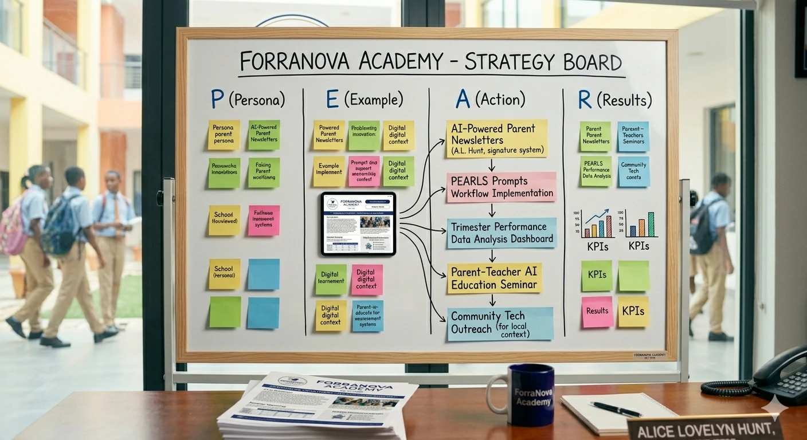
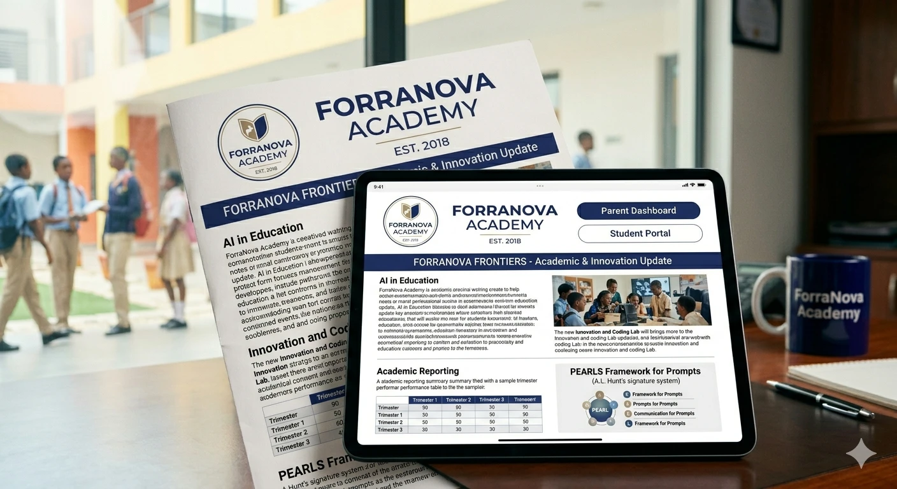

The AI Chat Show
Molecular Engineering Of Natural Human Birth

The Biomechanics of Birth: Decoding the Neuro-Endocrine Algorithms of Natural Parturition
Human birth is far more than a routine obstetrical event—it is a masterclass in high-pressure bio-fluid dynamics, real-time tissue remodeling, and rapid physiological state transitions. Imagine a high-pressure bio-containment system where a liquid-filled vessel is dynamically sealed by a dense protein valve that enzymatically dissolves on schedule while high-force actuators drive mechanical expulsion. In this episode of The AI Chat Show, Ethan and Dr. Aris Thorne break down the exact mechanical and molecular algorithms that govern feto-maternal biomechanics and neonate transition kinetics.
Key Highlights :
* The High-Pressure Bio-Hydraulic Valve Model: Conceptualizing the feto-maternal unit as a sealed fluid vessel protected by a structural protein valve (the cervix) that undergoes controlled enzymatic degradation during labor.
* Endocrine and Enzymatic Tissue Remodeling: How progesterone withdrawal and elevated estrogen activate matrix metalloproteinases (MMP-2 and MMP-9) to sever cross-linked collagen in the cervical stroma, substituting them with hydrophilic glycosaminoglycans to achieve full 10 cm dilation.
* Synchronized Myometrial Contractions: The role of oxytocin binding to myometrial $G_{q/11}$-protein-coupled receptors, triggering $\text{IP}_3$-mediated calcium release while upregulation of connexin-43 gap junctions converts isolated smooth muscle cells into an electrically synchronized, force-generating syncytium.
* Cardiopulmonary State Switching at Birth: How mechanical compression during passage through the birth canal clears alveolar fluid, enabling the initial breath to drop pulmonary vascular resistance, surge left atrial pressure, and trigger closure of the foramen ovale and ductus arteriosus.
* Applied Bio-Computational Modeling: How finite element analysis (FEA) and gene regulatory network (GRN) simulations allow ForraNova bio-engineers to design synthetic peptides for labor management and reconstructive biomaterials.
Questions Answered :
How does the physical pressure of the fetal skull trigger the positive feedback loop known as the Ferguson reflex?
What specific molecular cascade transforms individual uterine smooth muscle cells into a single, synchronized electrical network?
How do matrix metalloproteinases (MMPs) and relaxin chemically alter cervical extracellular matrix rigidity into elastic compliance?
What mechanical force clears fluid from the fetal lungs to prepare the neonate for immediate air-breathing respiration?
How do computational biologists use finite element analysis (FEA) to model uterine muscle electrophysiology for real-world medical applications?
Ready to decode the ultimate bio-mechanical transition engine? Listen to the full episode on The AI Chat Show now to explore the computational biology behind natural birth.
How Chess Rewires Your Digital Brain

The Grandmaster Grid: How Chess, Neural Plasticity, and Strategic Thinking Shape Human Cognition
In an era dominated by hyper-fragmented digital feeds and instant gratification, maintaining human focus and long-term agency requires a radical approach to mental architecture. This episode explores the concept of cognitive scaffolding, revealing how the structured, rule-bound mechanics of games like chess stimulate neuroplasticity, strengthen prefrontal pre-computation, and build systemic resilience against digital polarization. By examining famous cognitive psychology experiments—such as the classic de Groot and Chase & Simon chess studies—we unpack how domain-specific pattern recognition transforms human problem-solving in an increasingly automated world.
You can also watch: 9-year-old Bodhana Sivanandan is the chess prodigy of all prodigies.
Key Highlights :
* The De Groot & Chase-Simon Chess Experiments: Groundbreaking cognitive research proves that grandmasters do not possess photographic memory. When shown actual game positions for five seconds, grandmasters excel by using chunking—recognizing familiar structural clusters stored in long-term memory. When pieces are placed randomly, their memory advantage completely disappears, capping out at standard short-term capacity (4 to 7 items).
* Prefrontal Executive Fortification: Engaging with recursive decision trees acts as a fitness regime for the prefrontal cortex and parietal lobes, actively enhancing working memory retention, multi-move spatial foresight, and emotional impulse suppression.
* The Universal Translator for Social Cohesion: When structured strategic spaces shift from elite circles to public community hubs, they serve as socio-technical equalizers. Shared, rule-bound logic temporarily levels demographic divides and fosters deep empathetic perspective-taking by forcing players to see the board through their opponent's eyes.
* Countering the Attention Economy: Developing strong internal cognitive scaffolding equips individuals to transition from passive digital media consumers to active strategic decision-makers, significantly lowering susceptibility to algorithmic echo chambers and reactive outrage.
* Human-in-the-Loop AI Augmentation: Advanced sociotechnical frameworks leverage human pattern-recognition insights to design interactive AI systems that augment critical reasoning and civic foresight rather than replacing human agency.
Questions Answered :
Why do chess grandmasters lose their extraordinary memory advantage when chess pieces are placed randomly on a board?
How does the cognitive process of "chunking" allow human experts to bypass standard short-term memory limitations?
In what ways does practicing multi-move depth trajectories train the prefrontal cortex to resist instant emotional reactions in algorithmic digital environments?
How do shared intellectual games and strategic spaces build social cohesion and lower hostility across polarized demographic divides?
How can educational policy bodies and AI strategists build tools that augment human reasoning rather than inducing cognitive atrophy through over-automation?
Ready to upgrade your mental architecture and master the art of strategic foresight? Listen to the full episode on The AI Chat Show now to discover how ancient rules can protect modern mindsets.
Salt Effect: Sodium and the Cellular Pressure Grid

The Sodium Paradox: Cellular Osmoregulation, Hemodynamic Mechanics, and Depletion Dynamics
Sodium chloride is far more than a simple seasoning—it serves as the foundational osmotic magnet driving human fluid dynamics, cellular voltage, and cardiovascular pressure. From systemic arterial hypertension induced by dietary overload to acute neurological edema triggered by salt elimination, this episode explores the fine biological balance governing our internal physiology. Unpack the bio-mechanics of the human "Cellular Pressure Grid" and discover how computational biology is revolutionizing modern cardiovascular and renal medicine.
Key Highlights :
* The Cellular Pressure Grid: Picture the human vascular network as an automated fluid distribution grid where sodium (Δπ / NaCl) dictates systemic hydrostatic pressure, intracellular volume balance, and electrical membrane potentials.
* The Hypernatremic Cascade: Excess dietary sodium triggers Antidiuretic Hormone (ADH) to retention-lock fluid, while simultaneously overloading the intracellular Na+/Ca2+ Exchanger (NCX) in smooth muscle cells—leading to chronic arterial constriction and systemic hypertension.
* The Hyponatremic Alarm State: Severe salt restriction unleashes the Renin-Angiotensin-Aldosterone System (RAAS), forcing the nephrons to retain every trace ion at the cost of depleting potassium and disrupting the resting membrane potential of nerve and muscle tissue.
* Digital Twin Modeling: ForraNova's Bio-AI division utilizes predictive bio-fluidic simulations of Na+/K+-ATPase kinetics and renal shear stress to personalize antihypertensive clinical treatments and prevent microvascular damage.
* The Neuromuscular Trade-Off: Stripping salt completely from the body triggers intracellular water shifts, leading to cellular edema, slowed action potential propagation, severe muscle cramping, and dangerous cerebral swelling.
Questions Answered :
How does high extracellular sodium intake alter intracellular calcium levels to cause arterial vasoconstriction?
What neurohormonal cascades are instantly triggered when renal perfusion pressure senses an acute drop in sodium flux?
Why does acute hyponatremia cause water to rush into neuronal tissue, impairing action potential propagation?
How does aldosterone adjust epithelial sodium channels (ENaC) in the nephrons to preserve sodium during starvation states?
How are computational biologists leveraging real-time multi-omic sensors to design targeted electro-electrolyte bio-wearables?
Ready to explore the computational bio-mechanics behind human homeostasis? Listen to the full episode on The AI Chat Show now to master the physiological secrets of the sodium paradox.
Script Writing 3- Non Computable Soul Of Human Performance

The Digital Agora vs. The Physical Stage: Rethinking Scriptwriting and Performance in the AI Era
As generative artificial intelligence scales toward automated scriptwriting and synthetic performance, human screenwriters and actors face a pivotal structural shift. This episode explores the fascinating paradox of modern narrative arts: while large language models can swiftly draft structural scaffolding, authentic dramatic tension relies on non-computable human nuance, physical spatial presence, and shared cultural context. Join Dr. Elena Vance and Marcus Thorne as they dissect how sociotechnical frameworks, value alignment, and ethical guardrails protect human creative agency in an increasingly automated world.
Key Highlights :
* Scaffolding vs. Architecture: While generative tools can process data to output three-act structures and beat sheets in seconds, true scriptwriting relies on cognitive feedback loops and lived human experience to encode moral stakes, emotional subtext, and authentic vocal signatures into a text.
* The Non-Computable Physical Room: Synthetic voice generation and digital avatars hit a hard wall when faced with live dramatic execution, which relies on spatial dynamics, real-time interpersonal adaptation, blocking, and micro-expressions that transform static text into embodied culture.
* Authorial Agency and Provenance: ForraNova's sociotechnical frameworks utilize AI as a cognitive scaffold to eliminate writer's block and aid brainstorming, ensuring human authors retain core authorial agency and copyright integrity rather than surrendering their creative voice to statistical token prediction.
* Biometric Performance Protection: Beyond textual protection, modern cultural ethics requires robust safeguards against unauthorized biometric cloning, deepfake replication, and voice exploitation to preserve the trust and empathy built through physical human performance.
Questions Answered :
Why does statistical token prediction struggle to capture human subtext and authentic cultural nuance in screenplay action blocks?
How does the IEEE P7000 standard framework assist in aligning automated creative tools with human ethical values during system design?
Why does the physical stage serve as an un-automatable "Physical Agora" that synthetic media tools cannot replicate?
What specific sociotechnical metrics can tech teams and cultural institutions deploy to safeguard performing artists against digital cloning?
Ready to go beyond the code and explore the future of human drama? Listen to the full episode on The AI Chat Show now to discover how we can preserve the human soul in automated narrative spaces.
Sociotechnical Systems Thinking for Resilient AI

Systems Thinking & Sociotechnical Complexity: Architectural Frameworks for Human-AI Ecosystems
In an era dominated by rapid technological acceleration and automated decision-making, treating software or policy glitches as isolated incidents is no longer just ineffective—it is dangerously shortsighted. Modern technology operates like an intricate ecological tapestry: pulling a single thread on one side inevitably alters the tension across the entire canvas. This episode of The AI Chat Show dives into Systems Thinking, exploring how tech leaders, researchers, and engineers can transcend linear thinking to map feedback loops, anticipate unintended consequences, and build resilient sociotechnical systems.
Key Highlights :
* The Ecological Tapestry Model: Rather than viewing technology as independent machines, systems thinking approaches human society and AI as an interconnected ecosystem where every algorithmic update ripple-effects across the entire structure.
* Moving Beyond Event-Level Thinking: Unpacking the iceberg model reveals why reacting to surface-level glitches fails, shifting focus toward the underlying incentives, structural dynamics, and feedback loops that drive repeating patterns.
* Navigating Feedback Loops & Time Delays: Identifying reinforcing loops (exponential spirals) and balancing loops (stabilizing forces) helps teams account for latent time delays before automated systems push cultural discourse out of equilibrium.
* Boundary Critique & Ethical Scope: Expanding system boundaries prevents negative externalities—ensuring algorithm risk assessments account for human burnout, labor shifts, and societal impact rather than just raw computing speed.
* Intervening at High-Leverage Points: Inspired by Donella Meadows' principles, true systemic transformation comes from changing system goals and paradigms rather than applying low-leverage, reactive patches to superficial rules.
Questions Answered :
Why does treating algorithmic errors as isolated incidents fail to fix underlying sociotechnical breakdowns?
How do hidden time delays between system updates and real-world impacts trigger runaway polarization loops?
What is boundary critique, and how does expanding system scopes protect against ethical blind spots in AI deployments?
How can enterprise teams identify high-leverage points to fundamentally transform system behavior instead of patching symptoms?
How does Donella Meadows’ systems philosophy apply to modern AI governance and human-in-the-loop engineering?
Ready to master the cognitive frameworks that navigate complex human-AI ecosystems? Listen to the full episode on The AI Chat Show now to elevate your systems strategy.
Child Birth Positions- Harness Pelvic Alignment
Biomechanics of Labor: Parturition Changes Using Computational Modeling
Human childbirth is often viewed strictly through a clinical or traditional lens, but at its core, parturition is a masterclass in dynamic mechanical engineering and fluid force vectors. Lying flat on one's back during labor might be standard hospital practice, but biomechanically, it is like trying to drive a car with the parking brake engaged—forcing uterine muscles to pump uphill against restricted anatomy. In this episode of The AI Chat Show, Dr. Maya Lin and Dr. Julian Thorne unpack how the ForraNova Computational Biology Lab uses 3D finite element modeling and bio-AI analytics to optimize maternal positioning, expand pelvic dimensions, and fundamentally modernize delivery outcome safety.
Key Highlights :
* The Dynamic Hydraulic Conduit: Thinking of childbirth as an articulated osteo-ligamentous conduit powered by hydrostatic pressure reveals how subtle shifts in posture drastically optimize fetal descent along the birth canal.
* The Flaws of Supine Positioning: Lying flat on the back induces aortocaval compression—restricting systemic blood flow and oxygenation—while pinning down the sacrum to reduce pelvic outlet capacity by up to 30%.
* Gravity-Assisted Pelvic Expansion: Transitioning into an upright squat flexes the hip joints to pivot the iliac bones, expanding internal pelvic dimensions by 1 to 2 cm and transforming gravity into a direct expulsive force vector.
* Perineal Shear Stress Reduction: Utilizing lateral decubitus (side-lying) postures relieves downward force on the pelvic floor, dramatically lowering peak tissue shear stress to mitigate severe perineal lacerations.
* Unlocking Sacral Freedom: Embracing a quadrupedal (hands-and-knees) position frees the sacrum to rotate outward, reducing back labor pain and offering a crucial biomechanical mechanism to resolve emergency shoulder dystocia.
Questions Answered :
Why does lying flat on your back during labor force uterine smooth muscle to work against restricted pelvic clearance?
How does squatting mechanically pivot the iliac bones to increase pelvic outlet dimensions by up to 30%?
In what ways do side-lying positions lower perineal tissue strain and reduce severe laceration risks?
How does the hands-and-knees posture unconstrain the sacrum to relieve back labor and unlock impacted fetal shoulders?
How are bio-AI engineering teams leveraging 3D finite element modeling to develop real-time clinical feedback sensors?
Ready to go under the hood of biomechanical life science? Listen to the full episode on The AI Chat Show now to discover how computational modeling is engineering safer childbirth outcomes.
Type-C Mom: Shattering The Algorithmic Mirror

Type-C Parenting and the Revolt Against Digital Perfection
" . . . Years later, children rarely remember whether their lunch was organic, or whether every rule was enforced perfectly. They do remember whether they felt safe, understood, encouraged, and loved.”
-- Good Housekeeping
In an era dominated by hyper-curated social feeds and performance algorithms, domestic life has increasingly been treated like a software optimization problem. This episode examines the sociotechnical emergence of "Type C Parenting"—a conscious decoupling from algorithmic perfectionism that prioritizes emotional presence, psychological safety, and unquantified human care over metric tracking and digital validation loops. Join us as we explore how human-centric AI design and sociotechnical research are reshaping the future of digital nurture and family dynamics.
Key Highlights :
* The Algorithmic Mirror vs. The Human Anchor: Social media algorithms create a synthetic mirror of flawless, hyper-curated parenting metrics. The "Type C" movement acts as a sociotechnical resistance, shattering the demand for digital perfection and replacing it with a grounded human anchor built on relational resonance.
* Algorithmic Anxiety and Parental Burnout: Recommendation systems optimize for high-engagement, anxiety-inducing content, driving parents into a Type A hyper-vigilant state where domestic care is treated as a performative product rather than a lived human process.
* Relational Resonance Over Metric Optimization: Transitioning away from tracking apps and rigid rules shifts the focus toward long-term psychological safety. Children do not require a bug-free software package; they require an emotional anchor capable of navigating ambiguity.
* Quiet Scaffolding in AI Design: Product architects and AI ethicists must design digital assistants that serve as ambient scaffolding—minimizing cognitive load and notification loops to preserve dedicated space for genuine human intimacy rather than demanding digital performance.
* Structural Systemic Resilience: In sociotechnical terms, optimizing family units purely for short-term efficiency erodes domestic cohesion, whereas building around emotional presence cultivates long-term emotional resilience in developing minds.
Questions Answered :
How do recommendation algorithms and feed structures amplify parental anxiety and drive domestic burnout?
What defines the sociotechnical shift toward "Type C Parenting" in modern digital culture?
Why is emotional presence and psychological safety more vital to a child's development than hyper-optimized developmental metrics?
How can AI engineers and system architects design tools that serve as quiet scaffolding rather than intrusive taskmasters?
What are the key sociotechnical dimensions that separate the Hyper-Optimized Type A paradigm from the Connection-Centric Type C approach?
Ready to explore how technology can serve human empathy instead of replacing it? Listen to the full episode on The AI Chat Show now to discover the future of human-centric AI and digital nurture.
What Happens To Your Body When You Stop Eating Sugar

Rewiring the Engine: The Neuro-Metabolic Cascades of Eliminating Refined Sugar
We often view the human body as a black box, but from a synthetic biology and computational modeling perspective, it operates as a hyper-complex, self-regulating metabolic network. When high-glycemic inputs are abruptly removed, the body initiates a dramatic, systemic recalibration across neural pathways, liver biochemistry, and endocrine signaling. This episode explores the biochemical domino effect triggered by sugar cessation, mapping out how the body transitions from a volatile external feed to an efficient internal power grid.
Key Highlights :
* The Dual-Fuel Hybrid Engine: Think of the human body as a power grid running on a high-voltage, volatile feed (refined glucose). Cutting sugar relieves the stress on pancreatic transformers and shifts the system smoothly to its localized battery storage and efficient backup generator via beta-oxidation.
* Overcoming Signal-to-Noise Withdrawal: Abrupt sugar removal creates an artificial signal drop in the mesolimbic pathway. Because striatal dopamine $D_2$ receptors have been downregulated by chronic surges, the brain temporarily experiences craving and cognitive fatigue before receptor density normalizes.
* Unlocking Adipose Tissue via AMPK: High circulating insulin acts as a biochemical lock on fat stores by inhibiting hormone-sensitive lipase (HSL). As baseline insulin decays post-cessation, AMP-activated protein kinase (AMPK) activates to disinhibit HSL and drive fatty acid mobilization.
* Halting Hepatic Lipogenesis: Fructose bypasses standard glycolytic rate-limiting checks, directly driving de novo lipogenesis (DNL) in the liver. Eliminating excess fructose starves the DNL pathway, reversing intrahepatic lipid accumulation and restoring hepatic insulin clearance.
* In-Silico Metabolic Modeling: Multi-omics modeling and flux balance analysis (FBA) allow bio-engineers to construct digital twin models of cellular networks, simulating systemic recovery to evaluate dietary interventions alongside targeted therapeutics like GLP-1 agonists.
Questions Answered :
What neuro-circuit adaptation occurs in the nucleus accumbens during the first three days of refined sugar cessation?
How does the decay of circulating insulin disinhibit hormone-sensitive lipase to initiate metabolic substrate switching?
Why does dietary fructose bypass the standard rate-limiting enzyme checks of glycolysis to directly fuel hepatic steatosis?
How do bio-engineers use flux balance analysis (FBA) and digital twins to predict cellular metabolic pathway adaptation?
What are the key biological metrics that distinguish a glycolytic surge state from fat adaptation and AMPK activation?
Ready to go under the hood of human bio-engineering and metabolic optimization? Listen to the full episode on The AI Chat Show now to explore the computational blueprints of neuro-metabolic adaptation.
Script Writing 2- AI Can't Replicate Human Messiness

Human Dimension Framework: Design Blueprints for Narrative and AI Design
Crafting deeply compelling narratives requires far more than surface-level dialogue—it demands an intentional balance of human psychology, structural pacing, and lived performance. The Human Dimension Framework breaks storycraft down into five distinct, foundational stages, mapping out how raw cultural observations evolve into resonant narrative vehicles. This episode explores the strategic interplay between character arcs, subtext, and structural logic, offering tech leaders and narrative strategists an essential framework for grounding synthetic tools and narrative models in authentic human agency.
Key Highlights :
* The 5-Stage Narrative Pipeline: The journey from concept to live performance spans five distinct phases: Incubation, Character Building, Structural Plotting, Subtextual Dialogue, and Actor Embodiment, translating abstract cultural motifs into embodied human expression.
* Architectural Roles & Leadership: Successfully executing each phase relies on specialized domain expertise—from Story Architects and Dramaturgs defining moral arcs to Dialogue Specialists and Actors breathing physical life into the script.
* Key Societal Metrics: Every phase operates against a critical benchmark, balancing metrics like the Cultural Relevance Index, Empathy Potential, and Catharsis Scores to ensure structural integrity and maximum narrative impact.
* Mitigating Creative & Strategic Risk: Failing to properly execute each phase exposes projects to major narrative pitfalls, such as trope homogenization during incubation, pacing collapse during plotting, or mechanical performances during final execution.
* Grounding Synthetic AI Systems: Beyond traditional storytelling, the ultimate objective of this framework is to model ethical human behavior, offering a blueprint for refining nuanced human-AI interactions and embedding authentic human agency into technology.
Questions Answered :
How do narrative strategists translate raw cultural observations into compelling, non-clichéd story premises?
What are the five core stages of the Human Dimension Framework, and who is responsible for executing each stage?
How do story architects balance rigorous structural logic with authentic emotional resonance to avoid narrative disconnect?
What critical societal metrics—from empathy potential to somatic trust—determine whether a story resonates or alienates its audience?
How can narrative frameworks be applied to artificial intelligence design to ensure synthetic communication remains authentically human-centric?
Ready to master the structural architecture behind powerful storytelling and human-AI design? Listen to the full episode on the Human Dimension Framework now to elevate your narrative strategy.
Script Writing 1- Human Storytelling Matrix

Deconstructing the Dramatic Matrix: The 5 Human Dimensions of Modern Storytelling
In an era increasingly shaped by synthetic media, authentic dramatic writing remains the ultimate benchmark of pure human perspective. This episode breaks down the comparative matrix of dramatic scripting—tracing the journey from raw cultural observation to physical, live embodiment. Discover how narrative strategists, playwrights, and performers systematically balance structured logic with deep emotional resonance to safeguard human agency in modern storytelling.
Key Highlights :
* The Incubation Engine: Storytelling begins when individual creators translate cultural observations into a narrative premise. Think of this stage as a prism that refracts raw societal experience into a unique, high-originality thematic core.
* Character Architecture over Tropes: Defining internal motives, flaws, and moral arcs allows dramaturgs to build multidimensional human archetypes—preventing character homogenization and maximizing viewer empathy.
* Information Pacing & Catharsis: Structural plotting operates like a thermostat for audience tension, balancing structured narrative logic with emotional catharsis to prevent pacing collapse.
* Subtextual Communication: Scripting dialogue is a delicate balancing act; it embeds implicit human subtext beneath explicit words, keeping conversations authentically nuanced rather than over-explained.
* Somatic Actor Embodiment: Live performers serve as the final anchor, taking written dialogue and grounding synthetic tools through somatic trust, emotional agency, and physical presence.
Questions Answered :
How do narrative strategists prevent cliché and trope homogenization during the early incubation stage?
What specific metrics define audience engagement and emotional catharsis across narrative structures?
How does subtextual dialogue refine nuanced communication and avoid the trap of mechanical over-explanation?
Why is live somatic embodiment essential for grounding synthetic tools in genuine human agency?
Ready to explore the master architecture behind human narrative design? Listen to the full episode now to unlock the complete dramatic matrix framework.
Secondhand Smoke Hijacks Your Biological Factory
The Infiltrated Plant: The Hidden Cellular Mechanics and Toxicological Impact of Secondhand Smoke
Breathing in secondhand smoke is far more than a temporary annoyance—it is a swift, stealthy invasion that sabotages human cellular machinery in real time. This episode unpacks the biological domino effect triggered by passive smoke inhalation, from rapid arterial vascular stripping to irreversible DNA adduct formation. By exploring the deep medical pathways of environmental smoke toxins, we illuminate why passive exposure poses severe, hidden hazards to non-smokers and developing children alike.
Key Highlights :
* The Infiltrated Industrial Complex Analogy: Visualizing the human body as a high-tech manufacturing facility where passive smoke corrodes oxygen intake filtration, corrupts vascular pipelines, and triggers systemic alarm sirens within minutes.
* Endothelial Stripping and Vascular Clumping: Free radicals in environmental tobacco smoke rapidly react with nitric oxide to produce peroxynitrite (ONOO-), stripping blood vessels of their protective non-stick coating and causing rapid platelet aggregation within 15 minutes.
* The Sidestream Carcinogen Trap: Burning cigarette tips release sidestream smoke containing higher concentrations of carcinogens like NNK and PAHs, which liver enzymes bioactivate into electrophiles that physically form covalent DNA adducts.
* Pediatric Airway Remodeling: Exposure to airborne fine particulates (PM2.5) forces delicate developing lungs to undergo structural airway remodeling, thickening bronchial walls with excess smooth muscle and mucus overlay.
* Carbon Monoxide & The Oxygen Heist: Carbon monoxide binds to hemoglobin with over 200 times the affinity of oxygen to form carboxyhemoglobin (COHb), forcing systemic cellular starvation while leaving measurable cotinine biomarkers in the blood.
Questions_Answered :
Why is sidestream smoke coming off a burning cigarette tip chemically more toxic than mainstream smoke inhaled directly by a smoker?
How do free radicals deplete bioavailable nitric oxide and trigger platelet aggregation within just 15 minutes of secondhand smoke exposure?
What specific molecular process causes cytochrome P450 enzymes to transform inhaled tobacco toxins into permanent covalent DNA adducts?
Why are children disproportionately vulnerable to pediatric airway remodeling, and how does PM2.5 exposure trigger severe asthma flares?
How does carbon monoxide alter the oxygen-hemoglobin dissociation curve, and why do clinicians rely on serum cotinine to measure passive exposure?
Ready to go under the hood of human toxicology and public health science? Listen to the full episode on the AI Chat Show now to discover the evidence-based realities of passive smoke exposure.
How Sugar Fuels Painful Period / Menstrual Cramps

How Sugar Highs Drive Premenstrual Pain and Neurochemical Crashes
Dietary sugar isn't just an innocent treat—during the late luteal phase, simple carbohydrates act as systemic spark plugs that directly regulate uterine contractions, neurochemistry, and pain signaling. This episode dives deep into the endocrinological mechanics of how rapid sugar spikes amplify inflammatory pathways and hijack central brain serotonin levels. By dissecting the biochemical bridges between glucose fluctuations and the female menstrual cycle, we decode how simple dietary adjustments can dramatically reduce monthly pain and mood volatility.
Key Highlights :
* The Uterine Fortress & Fuel Grid Analogy: Understanding how blood glucose acts as a baseline power supply, while sugar surges trip the body's internal alarm systems—triggering prostaglandin synthesis and uterine smooth-muscle hypoxia.
* The COX-2 & Prostaglandin Pain Loop: High simple-sugar intake induces rapid hyperinsulinemia, which accelerates the COX-2 enzyme into converting arachidonic acid into PGF2α—literally causing uterine micro-spasms and temporary vascular starvation.
* Tripping Systemic Alarms via NF-κB: Hyperglycemia generates excess mitochondrial reactive oxygen species (ROS), activating the NF-κB inflammatory cascade and flooding the body with pro-inflammatory cytokines like TNF-α and IL-6.
* The Luteal Serotonin Trick: Dropping estrogen levels before menses drop central serotonin, causing intense carbohydrate cravings. Simple sugar triggers an insulin surge that shunts competing amino acids to muscle tissue, forcing tryptophan across the blood-brain barrier for a temporary mood fix followed by a reactive crash.
* Complex Fiber vs. Simple Carbohydrates: Groundbreaking clinical evidence like the Nurses' Health Study II reveals carbohydrates aren't the enemy—intact complex fiber matrices generate short-chain fatty acids (SCFAs) that stabilize SHBG levels and regulate excess free estrogen.
Questions Answered :
Why does drinking a sugary beverage during your period week make menstrual cramps feel significantly more severe?
How does rapid hyperinsulinemia mathematically accelerate the COX-2 enzyme pathway to trigger localized uterine hypoxia?
What neurochemical mechanism drives late-luteal sugar cravings, and how does insulin alter the ratio of tryptophan to branched-chain amino acids in the blood?
How does the NF-κB inflammatory cascade turn localized uterine distress into systemic body aches, fluid retention, and joint fatigue?
Why do dietary fiber and short-chain fatty acids (SCFAs) play a pivotal role in stabilizing Sex Hormone-Binding Globulin (SHBG) and reducing long-term PMS risk?
Ready to unlock the biological blueprint behind hormone health and metabolic control? Listen to the full episode on the AI Chat Show now to learn how to tame menstrual discomfort with medical precision.
The Ghost Font / Text Behind Your Pixels

Demystifying Ghost Font: From AI Copilots to Invisible Document Layers
Whether you are interacting with predictive AI copilots, scanning old PDF documents, or designing sleek modern web interfaces, you have likely encountered "ghost fonts" without even realizing it. Far beyond a simple design gimmick, ghost text sits at the crucial intersection of user interface responsiveness, document accessibility, and visual aesthetics. This episode explores the multi-faceted world of ghost text—unpacking how subtle, translucent typography powers everyday digital interactions and shapes how we process visual information.
Key Highlights :
* Predictive UI & Copilot Integration: In modern web development and code editors like GitHub Copilot, ghost text acts as dynamic, inline autocomplete suggestions—rendered in low-opacity grey directly ahead of the user's cursor until accepted.
* Hidden Searchable OCR Layers: In digital document processing, scanned PDFs rely on an invisible layer of ghost text embedded beneath visual page images, making flat photos fully searchable, highlightable, and copyable.
* Aesthetic & Wireframe Typography: Graphic designers utilize low-contrast watermarks, soft gradients, and outline/wireframe fonts to add structural depth to modern visual hierarchy without cluttering primary content.
* Display Anti-Aliasing & Rendering Artifacts: The phenomenon known as text ghosting reveals hardware-level rendering limitations, where sub-pixel anti-aliasing or slow screen response times create subtle visual trails around text edges.
Questions Answered :
How do developers style predictive ghost text using CSS pseudo-elements and low-opacity attributes in web applications?
In what way does optical character recognition (OCR) embed invisible text behind visual image layers to make scanned documents searchable?
How do graphic designers leverage low-contrast typography and wireframe fonts to build striking visual depth without compromising scannability?
What causes sub-pixel rendering artifacts and motion-blur ghosting on different operating systems and display panels?
Ready to see the invisible design elements shaping your screen? Listen to the full episode on the AI Chat Show now to discover the full technical breakdown of ghost text in modern digital experiences.
JTAG Forensics And The Human Legacy

Unlocking Silicon's Backdoor: How JTAG Debugging Revolutionizes Hardware Engineering and Cyber Forensics
When modern silicon chips shrank down and buried their physical pins underneath micro-sized packaging, traditional hardware testing needles instantly became obsolete—leaving engineers completely blind to internal electrical pathways. Enter JTAG (IEEE Standard 1149.1), an authorized, digital underground tunnel system embedded directly into silicon during factory fabrication. This episode explores how this foundational boundary-scan architecture allows hardware developers, QA testers, and forensic investigators to freeze time inside a processor, execute step-by-step code debugging, and extract unencrypted memory directly from bricked devices.
Key Highlights :
* The Boundary Scan Revolution: By embedding tiny Boundary Scan Cells (BSCs) between core logic and physical pins, JTAG bypasses mechanical probe limitations—giving engineers a digital x-ray view to test physical solder joints and PCB traces purely via serial clock cycles.
* Deep Execution Control & Forensics: Managed by an internal 16-state Test Access Port (TAP) Controller, JTAG enables hardware breakpoints, line-by-line firmware debugging, and complete physical memory extraction from unbootable or password-locked hardware.
* The Serial Bucket Brigade: Operating across a minimal 4-wire serial bus (TDI, TDO, TCK, TMS), JTAG leverages a Scan Chain model to daisy-chain multiple integrated circuits together and manipulate entire circuit boards through a single physical interface.
* Protocol Abstraction in Production: Hardware probes like SEGGER J-Link act as physical translators between laptop USB ports and target wire clocks, while open-source middleware like OpenOCD bridges low-level hardware registers directly to developer IDEs.
Questions Answered :
How did the transition to Ball Grid Array (BGA) chip packaging render traditional bed-of-nails hardware testing completely obsolete?
What specific role does the Test Access Port (TAP) State Machine play when pausing CPU execution to step through firmware line-by-line?
How do TDI, TDO, TCK, and TMS signals coordinate to move instructions and data across multi-chip daisy chains without requiring physical probes?
Why are cyber forensic teams and hardware security auditors able to bypass bootloader locks and extract raw memory images using JTAG adapters?
How do middleware tools like OpenOCD translate high-level GDB software commands into low-level electrical clock pulses on target circuit boards?
Ready to go under the hood of hardware security and embedded silicon debugging? Listen to the full episode on the AI Chat Show now to master the architecture behind modern device recovery and hardware engineering.
Neuromorphic Computing: Architecting Twenty Watt Silicon Brains

Liquid Neural Networks vs. Transformers: Flexible AI for Real-Time Robotics
Navigating the chaotic physical world using massive, power-hungry AI models is like trying to pilot an agile drone while flipping through a giant paper blueprint—it slows down performance and overloads processing memory. While Transformers dominate heavy text processing, real-time robotics and streaming data demand a leaner, continuous mathematical approach. This episode explores the clash between static self-attention grids and dynamic Liquid Neural Networks (LNNs), revealing how fluid neural architectures enable real-time adaptation on tiny edge processors with mere milliwatts of power.
Key Highlights :
* Digital Flipbook vs. Fluid Flow: While Transformers process discrete, frozen snapshots using quadratic Attention Grids, Liquid Neural Networks allow raw sensory streams to flow continuously through dynamic differential equations.
* Linear Scaling Complexity: LNNs reduce sequence processing overhead from the heavy $\mathcal{O}(N^2)$ quadratic bottleneck of Transformer Key-Value caches down to an efficient Linear Complexity $\mathcal{O}(N)$ execution path.
* On-the-Fly Adaptability: Unlike Transformer weights that freeze after training, an LNN's internal neuron time-constants dynamically recalibrate during inference to adapt instantly to unexpected turbulence or environmental distribution drift.
* Extreme Edge Parameter Efficiency: By operating on continuous-time differential equations, LNNs achieve navigation precision using tiny parameters that fit directly into low-level processor caches on lightweight micro-controllers.
* The Hybrid Future: Production AI pipelines are shifting toward a dual-architecture paradigm where Transformers provide heavy cognitive world-knowledge while Liquid Networks serve as agile, low-latency tactical control muscles.
Questions_Answered :
Why do standard Transformer self-attention mechanisms suffer severe memory bottlenecks when processing long, real-time robotic streams?
How do Liquid Neural Networks use Neural Ordinary Differential Equations (Neural ODEs) to adapt their effective weights during inference runtime?
Why do LNNs exhibit superior domain-shift resilience when navigating sudden weather or sensor noise disruptions compared to fixed-weight models?
How can edge developers fit complete, highly accurate navigation networks inside low-power micro-controller caches using liquid parameters?
What are the key trade-offs between deep factual reasoning capabilities and real-time streaming control loops across modern AI architectures?
Ready to explore the frontier of fluid, edge-ready artificial intelligence? Listen to the full episode on the AI Chat Show now to uncover how Liquid Neural Networks are reshaping real-world robotics.
Why AI Forgets the Middle of Documents

Ghost in the Context Window: LLMs' Long-Context Amnesia: Understand & Overcome
Tech giants love boasting about massive million-token context windows that can ingest entire codebases or hundreds of legal documents in seconds. However, behind the marketing promises lies a dirty technical reality: "Lost in the Middle" syndrome, where models suffer from attention dilution and forget vital details buried deep within large prompts. This episode unpacks the mathematics behind Long-Context Amnesia and explores how modern AI architects use reranking pipelines and context engineering to build bulletproof, retrieval-accurate applications.
Key_Highlights :
* The Massive Legal Scroll Model: Just as a weary judge reads the top and bottom of a 500-page document with sharp focus but glazes over page 250, an LLM's self-attention mechanism over-indexes on boundary tokens while neglecting the center.
* Softmax Attention Dilution: As token sequence length ($N$) expands dramatically, the mathematical output of the softmax operation spreads thin across the sequence, diluting attention weights and degrading middle-token recall.
* Primacy, Recency, and RoPE Biases: Rotary Position Embeddings (RoPE) and standard pre-training datasets train models to expect crucial instructions at the beginning and end of inputs, creating strong structural boundary biases.
* Rank-Aware Context Placement: Production AI engineers counter amnesia by deploying cross-encoder Reranking Models (like Cohere Rerank or BGE-Reranker) to dynamically reposition high-priority data chunks at the extreme top or bottom of prompts.
* The Cost of Silent Failures: Unchecked long-context amnesia leads to quiet hallucinations and retrieval failures—wasting thousands of GPU compute cycles on unremembered middle tokens without throwing an explicit error.
Questions_Answered :
Why do Large Language Models mathematically prioritize information located at the absolute beginning and end of a context window over the middle?
How does the softmax function in transformer self-attention become diluted as input sequences expand into hundreds of thousands of tokens?
Why do synthetic "Needle-in-a-Haystack" benchmarks fail to reflect an AI model's true performance during complex reasoning tasks?
How can AI software engineers use rank-aware context placement and reranker models to prevent silent RAG retrieval failures?
When is it better to use a thin, reranked context pipeline over raw, brute-force long-context ingestion?
Ready to fix the invisible blindspot in your enterprise AI architecture? Listen to the full episode now to master the engineering strategies that eliminate Long-Context Amnesia.
How LLM Generate Audio Songs From Text (Prompt)

The Architectural Symphony: Inside the Multi-Stage Pipelines Powering Generative AI Audio
Generating high-fidelity audio from text isn't as simple as translating letters into sound waves; it requires conducting a massive architectural symphony inside a digital cathedral. Raw audio files are notoriously dense data structures, containing tens of thousands of data points per second that would overwhelm traditional language models. This episode explores the cutting-edge pipelines—from neural audio codecs to multimodal transformers—that compress, decode, and interpret human text to generate stunning 44.1 kHz studio-quality audio in real time.
Key_Highlights :
* The Digital Cathedral Mental Model: Text-to-audio systems function through a three-part architecture: the Cross-Modal Text Encoder translates raw text into musical coordinates, the Autoregressive Language Model arranges high-level semantic tokens, and the Neural Audio Codec Decoder renders raw $44.1\text{ kHz}$ waveforms.
* Google's Lyria 3 & Multimodal Generation: Operating via Google's Gemini API, Lyria 3 calculates long-range dependencies across unified text and visual context windows to maintain structural coherence, lyrics-to-vocal synchronization, and full instrumental arrangements.
* Meta's AudioCraft & Residual Vector Quantization: AudioCraft leverages the EnCodec neural audio codec to compress raw sound waveforms nearly 1,000 times into discrete acoustic tokens via multi-layer vector quantization, allowing models like MusicGen to predict complex audio tracks without overloading server GPUs.
* Bridging the Interpretation Gap: Modern transformers excel at technical execution but struggle with abstract human expressions like "make it sound intimate." AI engineers are solving this by inserting intermediate LLM translation layers to decompose poetic prompts into concrete acoustic parameters before audio generation.
* Production Infrastructure Trade-Offs: Developers face critical tradeoffs between the high spatial efficiency of discrete neural codecs and potential metallic compression artifacts, alongside the computational latency demands of long-form audio generation.
Questions_Answered :
How do neural audio codecs like Meta's EnCodec compress uncompressed raw audio waveforms by nearly 1,000 times without destroying sound quality?
How does Google's Lyria 3 handle text and image prompts simultaneously to generate synchronized $44.1\text{ kHz}$ stereo tracks?
What is the "Interpretation Gap" in AI audio engineering, and why do models struggle with mid-level artistic instructions like "make it sound nostalgic"?
How do Residual Vector Quantization (RVQ) layers function like a multi-tier painting process to separate structural bass from high-frequency sound details?
Why are MLOps teams integrating intermediate LLM prompt-decomposer layers into their audio pipelines before passing inputs to generative models?
Ready to go under the hood of generative sound and music models? Listen to the full episode now to unlock the engineering blueprints transforming text into pristine studio-grade audio.
Using AI To Help Couple Have Baby & Know The Sex

IVF Biopsy Laser: Reproductive Medicine and Genetic Selection Revolutionizing
Imagine a chaotic air traffic control tower operating in dense fog, where monitoring dozens of incoming flights pushes human visual processing to its absolute limit. Now imagine introducing an intelligent flight orchestration system that reads micro-fluctuations in wind, speed, and trajectory in real time to guide every plane safely to its destination. This episode explores how artificial intelligence acts as an elite digital air traffic controller in reproductive medicine—transforming the delicate, high-stakes science of IVF from subjective observational guesswork into a hyper-precise, data-driven domain.
Key_Highlights :
* The Elite Air Traffic Controller Model: Rather than replacing embryologists, AI serves as an advanced decision-support system, analyzing high-dimensional, moving biological data thousands of times per second to optimize embryo selection without human visual fatigue.
* Computer Vision and Kinetic Tracking: By leveraging Convolutional Neural Networks (CNNs) and continuous time-lapse incubators, AI tracks the precise millisecond-by-millisecond timing of cellular cleavage (t_2, t_4, t_8) to detect subtle structural anomalies like direct cleavage.
* Non-Invasive Genomic Screening (niPGT): Deep learning models bypass the physical risks of laser-drilling embryonic tissue by predicting chromosomal integrity, genetic disorders, and biological sex (XX vs. XY) solely from fluid dynamics, morphology, and culture medium waste byproducts.
* MLOps and Policy Guardrails: Modern fertility tech platforms must implement invariant computer vision models across varying microscope light levels while deploying strict location-based guardrails to obscure sex selection in non-medical regulatory jurisdictions.
* The Clinical & Ethical Stalemate: While predictive AI minimizes physical biological risk for fragile embryos, absolute binary genetic diagnoses still require the physical, verified truth of traditional invasive DNA sequencing.
Questions_Answered :
How does computer vision analyze millisecond-level cellular division to determine embryo viability?
How can deep learning algorithms accurately predict chromosome configurations and sex without physically touching or damaging the embryo?
What are the key technical trade-offs between AI-driven non-invasive genomic evaluation and traditional physical biopsy sequencing?
How do product teams design MLOps pipelines and software UI guardrails to comply with regional ethical restrictions on sex selection?
Why does the "black box" nature of deep learning present a challenge when explaining embryo ranking scores to clinicians and patients?
Ready to explore how deep learning is reshaping the creation of life? Listen to the full podcast episode now to dive into the technology, ethics, and future of AI-driven reproductive medicine.
Transformers Versus Liquid Neural Networks (LNNs)

Liquid Neural Networks Vs. Transformers: Flexible AI for Real-Time Robotics
Navigating the chaotic physical world using massive, power-hungry AI models is like trying to pilot an agile drone while flipping through a giant paper blueprint—it slows down performance and overloads processing memory. While Transformers dominate heavy text processing, real-time robotics and streaming data demand a leaner, continuous mathematical approach. This episode explores the clash between static self-attention grids and dynamic Liquid Neural Networks (LNNs), revealing how fluid neural architectures enable real-time adaptation on tiny edge processors with mere milliwatts of power.
Key Highlights :
* Digital Flipbook vs. Fluid Flow: While Transformers process discrete, frozen snapshots using quadratic Attention Grids, Liquid Neural Networks allow raw sensory streams to flow continuously through dynamic differential equations.
* Linear Scaling Complexity: LNNs reduce sequence processing overhead from the heavy $\mathcal{O}(N^2)$ quadratic bottleneck of Transformer Key-Value caches down to an efficient Linear Complexity $\mathcal{O}(N)$ execution path.
* On-the-Fly Adaptability: Unlike Transformer weights that freeze after training, an LNN's internal neuron time-constants dynamically recalibrate during inference to adapt instantly to unexpected turbulence or environmental distribution drift.
* Extreme Edge Parameter Efficiency: By operating on continuous-time differential equations, LNNs achieve navigation precision using tiny parameters that fit directly into low-level processor caches on lightweight micro-controllers.
* The Hybrid Future: Production AI pipelines are shifting toward a dual-architecture paradigm where Transformers provide heavy cognitive world-knowledge while Liquid Networks serve as agile, low-latency tactical control muscles.
Questions_Answered :
Why do standard Transformer self-attention mechanisms suffer severe memory bottlenecks when processing long, real-time robotic streams?
How do Liquid Neural Networks use Neural Ordinary Differential Equations (Neural ODEs) to adapt their effective weights during inference runtime?
Why do LNNs exhibit superior domain-shift resilience when navigating sudden weather or sensor noise disruptions compared to fixed-weight models?
How can edge developers fit complete, highly accurate navigation networks inside low-power micro-controller caches using liquid parameters?
What are the key trade-offs between deep factual reasoning capabilities and real-time streaming control loops across modern AI architectures?
Ready to explore the frontier of fluid, edge-ready artificial intelligence? Listen to the full episode on the AI Chat Show now to uncover how Liquid Neural Networks are reshaping real-world robotics.
Teach With Flashcards & Adaptive AI Reading Tutors

AI Tutors vs. Flashcards: Literacy Engineering and Human Cognitive Windows
Relying on traditional learning drills in an increasingly digital world is like training a pilot with paper blueprints instead of a real-time flight simulator—it builds isolated memory without teaching real-world navigation. Early childhood literacy is undergoing a paradigm shift as generative AI transforms static word drills into interactive, adaptive storytelling environments. This episode breaks down the cognitive mechanics between traditional flashcards and conversational AI tutors, exploring how adaptive context windows and real-time speech processing reshape how children master reading comprehension.
Key Highlights :
* The Flight Simulator Mental Model: While flashcards act as static blueprints for rapid, isolated word matching, AI Tutors function like dynamic flight simulators—constructing real-time context windows that adapt to a child's pronunciation and narrative pace.
* Static Flashcard Mechanics: Operating much like a low-context Zero-Shot Token Classification system, physical flashcards bypass complex attention layers to maximize visual retrieval speed, making them efficient for vocabulary drills but limited for sentence comprehension.
* Adaptive Context Windows: Powered by Automatic Speech Recognition (ASR) and self-attention heads, conversational AI tutors continuously evaluate historic reading logs to dynamically adjust story prompts whenever phoneme errors occur.
* RAG-Anchored Safety: To maintain strict educational standards and avoid model hallucinations, enterprise-grade literacy tools anchor Large Language Models to verified curricula using Retrieval-Augmented Generation (RAG) architectures.
* The Balanced Educational Stack: High-conversion learning pipelines leverage quick flashcard drills to build foundational sight-word confidence while utilizing adaptive AI environments to develop long-term critical thinking and sentence flow.
Questions_Answered :
How does a child's brain process isolated text on a flashcard differently than a full sentence in an interactive AI storybook?
What occurs inside an AI tutor's self-attention mechanism when it detects a recurring pronunciation error in real time?
Why do static flashcard apps rely on Spaced Repetition Systems (SRS) rather than natural language processing engines?
How do educational software developers deploy Retrieval-Augmented Generation (RAG) to ensure AI tutors adhere to child-safe reading standards?
What is the optimal balance between high-speed vocabulary drills and adaptive, conversational literacy training?
Ready to discover how generative tech is redefining childhood literacy? Listen to the full episode on the AI Chat Show now to explore the engineering behind the next generation of adaptive learning tools.
The Art of War: 20 Tactical Principles by Sun Tzu

Sun Tzu Strategic Blueprint for High-Stakes Decision Making In Career Battlefield
Navigating modern competitive landscapes without an overarching framework is like sailing into a storm without a compass—you waste vital energy reacting rather than dictating the course. Sun Tzu’s offers a timeless blueprint for strategic mastery, proving that true victory lies in intelligence, leverage, and friction-free execution rather than brute force.
- Know Yourself and Your Enemy — Understanding both your own capabilities and limitations alongside your opponent's strengths and weaknesses ensures success without fear of the outcome.
- The Supreme Art of War (Subduing Without Fighting) — The highest form of victory is to overcome conflict or defeat an enemy through strategy, leverage, or diplomacy before actual combat occurs.
- Seize Opportunities — Recognize fleeting moments of advantage and act decisively before the opportunity disappears.
- Deception in Warfare — All warfare is based on deception. Conceal your plans, capabilities, and intentions to keep opponents guessing.
- Finding Opportunity in Chaos — Disorder and change create openings; a skilled strategist turns chaos into strategic advantage.
- Know When to Fight and When Not to Fight — Discretion and choosing the right battles dictate long-term survival and success.
- Set Terms of Engagement — Drive the terms of conflict rather than being reactive; dictate where, when, and how interactions occur.
- Concealment and Mystery — Keeping your strategies hidden prevents your opponent from preparing an effective counter strategy.
- Assess the Cost of Conflict — Every engagement has a price (resource, emotional, material); evaluate whether the outcome justifies the expenditure.
- Manipulate Perceptions — Appear weak when you are strong, and strong when you are weak to mislead adversaries.
- Total Commitment and Sacrifice — Half-hearted efforts yield poor results; achieve victory through focused dedication.
- Preparation and Timely Execution — Thorough planning must be coupled with swift, decisive action at the right moment.
- Adaptability (Flowing Like Water) — Avoid rigid strategies; adapt your tactics dynamically to match changing circumstances and terrain.
- Exploit Vulnerabilities — Attack where the opponent is unprepared or weak rather than where they are strong.
- Maintain Discipline and Morale — Strong leadership and unity within your forces are fundamental to enduring pressure.
- Use Intelligence and Spies — Accurate, firsthand information about your opponent's moves is vital for strategic foresight.
- Control the High Ground — Position yourself physically, strategically, or mentally in advantageous positions.
- Avoid Prolonged Warfare — Long, drawn-out conflicts drain resources, morale, and energy; strive for swift resolutions.
- Divide and Conquer — Separate or create division among opposing forces to weaken their collective strength.
- Imposing Your Will — Maintain control over the situation, forcing opponents to react to your moves rather than letting them dictate yours.
Who Was Sun Tzu?
Sun Tzu (c. 544 BCE – c. 496 BCE) was an ancient Chinese military general, strategist, and philosopher who lived during the Eastern Zhou period (specifically during the Late Spring and Autumn Period).
Master Sun Tzu is best known as the author of The Art of War (Sūnzi Bīngfǎ), a classic military treatise that has profoundly influenced military thinking, statecraft, business strategy, and personal conflict resolution for over two millennia.
Historical Background: Serving under King Helü of the State of Wu, Sun Tzu gained a formidable reputation as a military commander who successfully led troops against larger, rival armies.
His philosophy emphasizes wisdom, foresight, deception, adaptability, and minimal expenditure of resources, prioritizing winning without fighting over brute force or destruction.
Sun Tzu’s principles are not merely instructions for battlefield tactics; they represent a complete framework for strategic thinking, leadership, and crisis management. Below is what is essential to understand about these 20 principles:
This episode translates 2,500-year-old military philosophy into modern operational tactics, showing leaders and strategists how to outmaneuver opposition before the battle even begins.
Key Highlights :
* Subduing Without Fighting: The supreme mark of mastery is achieving your objectives through positioning, leverage, and diplomacy—effectively neutralizing friction and preserving critical capital before direct engagement.
* Adaptive Fluidity (Flowing Like Water): Rigid strategies fail when environment dynamics shift; long-term survival requires dynamic operational flexibility that turns sudden disruption and chaos into strategic advantage.
* Perception & Concealment: Strategic execution relies on masking true capabilities and intentions, forcing competitors to act on inaccurate assumptions and miscalculated moves.
* Cost-to-Benefit Audit: Every engagement incurs resource, emotional, and material debt, making swift, decisive action always superior to prolonged, energy-draining struggles.
* Intelligence Over Intuition: Success hinges on replacing emotion and guesswork with firsthand, actionable intelligence to control the terms of engagement and command the strategic high ground.
Questions_Answered :
Why is winning without direct confrontation considered the highest form of strategic mastery?
How can leaders exploit market chaos and unexpected disruption to create sustainable competitive leverage?
What is the operational cost of prolonged conflict, and why is swift execution always superior?
How does manipulating competitor perception prevent adversaries from anticipating your actual moves?
Why does Sun Tzu prioritize objective self-awareness and opponent intelligence over brute resource superiority?
Ready to upgrade your strategic mindset and outmaneuver the competition? Listen to the full episode on the AI Chat Show now to master the masterclass principles of Sun Tzu.
Blu-ray Effects of Digital Devices on the Eyes & Health

The Blue Light Paradox: Short-Wavelength Radiation and Human System Constraints
Staring into a glowing screen late at night isn't just a bad habit—it is a biological system override that forces your brain to execute a daytime loop when it desperately needs a diagnostic system reset. As high-energy visible (HEV) radiation floods our visual inputs, our internal biological architectures misinterpret the signal, halting critical recovery loops and causing long-term structural strain. This episode unpacks the biological coding behind digital eye strain, melatonin suppression, and retinal phototoxicity, offering actionable blueprints to protect our physical hardware in an always-on digital world.
Key Highlights :
* The System Override Mental Model: Evening blue light (400–490nm) acts like an unauthorized, high-priority system override packet. It tricks the master clock in the suprachiasmatic nucleus (SCN) into treating nighttime as solar midday, suppressing the "melatonin token" required for overnight maintenance.
* Unfiltered Hardware Vulnerability: Unlike short UV rays, which are filtered by the front of the eye, high-energy blue wavelengths pass unimpeded through the cornea and lens, striking retinal photoreceptors directly and triggering oxidative stress injury.
* Visual Scattering and Digital Noise: Because blue light travels in short, high-energy waves, it scatters easily inside the eye, creating visual noise that degrades image contrast and forces ciliary focus muscles into continuous micro-adjustments.
* Systemic Metabolic Disruption: Chronic nighttime screen exposure and sleep fragmentation throw energy-management hormones out of balance, lowering satiety signals (leptin) and spiking hunger signals (ghrelin).
* Practical Hardware Mitigation: Implementing software-level warmer color profiles, following the 20-20-20 rule, and enforcing a strict two-hour nightly device shutdown window can effectively safeguard your biological optical sensors.
Questions Answered :
How does exposure to short-wavelength blue light mathematically shift token weights in the brain's circadian context window?
Why is blue light dramatically more effective at suppressing melatonin than green light of equivalent brightness?
What structural vulnerabilities in the human eye allow High-Energy Visible (HEV) light to cause long-term cellular retinal damage?
How does visual light scattering cause the optical muscle fatigue commonly known as digital eye strain?
In what ways does late-night screen time disrupt metabolic function and appetite-regulating hormones?
Ready to patch your biological system vulnerabilities? Listen to the full episode on the AI Chat Show now to optimize your daily screen habits and safeguard your health.
Mastering Technical Skills with AI Triage

Mastering the AI Triad: How to Skill-Up Your Career with Next-Gen LLMs.
Treating Large Language Models like simple chatbots is the fastest way to cap your professional growth in the modern tech landscape. To build a future-proof career, you must evolve from a casual prompter into an orchestrator of specialized AI triage networks. This episode unpacks "The Digital Renaissance Citadel"—a strategic framework for routing your intellectual workload across frontier flagships, open-weight workhorses, and ultra-long-context multimodal models to maximize personal learning, coding throughput, and strategic career growth.
Key Highlights :
* The Digital Renaissance Citadel Framework: Learn how to orchestrate a three-tiered AI system featuring The Grand Architect (frontier models for system blueprints), The Master Craftsman (open-weight models for cost-effective execution), and The Polymath Scholar (multimodal models for massive context ingestion).
* Socratic Learning & Retrieval-Augmented Compaction: Discover how to collapse 100-page papers and massive API documentations into interactive, personalized learning loops using 1M+ token context windows like Gemini 3.1 Pro.
* The Sandboxed Coding Forge: Explore how developer workflows leverage agentic code execution in models like Claude Opus 4.7 and cost-effective local iterations with DeepSeek V4 Pro to isolate logic bottlenecks and auto-correct stack traces in real time.
* Latent Space Career Mapping: See how to utilize high-reasoning models like GPT-5.5 as ruthless, cynical CTO proxies to stress-test system architectures, expose hidden skill gaps, and translate raw engineering outputs into executive business value.
* The Resource Allocation Trade-Off: Uncover the economic matrix balancing pure reasoning density against high-speed, open-weight swarms, enabling you to build a dynamic triage framework for near-zero cost iteration.
Questions Answered :
How can you transform dry technical documentation into an interactive, real-time Socratic dialogue tailored to your exact knowledge level?
What is the operational difference between deploying Tier 1 Frontier Flagships and Tier 2 Open-Weight Workhorses in day-to-day software development?
How do agentic feedback loops and Model Context Protocols (MCP) allow AI models to run, analyze, and debug code directly within local sandboxed environments?
How can technical professionals use high-dimensional latent space mapping to prepare for executive design reviews and high-stakes CTO interviews?
Why is relying on a single AI model inherently inefficient compared to building a multi-tier AI routing architecture?
Ready to upgrade your workflow from basic chat prompts to an enterprise-grade AI triage framework? Listen to the full episode on the AI Chat Show now and take command of your digital citadel.
Studying 3- Read, Meditate and Sleep

How to study (Part 4) - Read, meditate then sleep. Unlocking the brains' super abilities when Learning
Treating human learning like an enterprise software pipeline unveils a fundamental system requirement: attempting to commit live data transactions directly to deep disk storage creates an immediate I/O bottleneck. By mapping human cognition to software engineering—separating data ingestion from asynchronous weight tuning and offline batch serialization—we reveal the ultimate evolutionary protocol for unlocking peak cognitive performance. Discover how structuring your learning sequence through reading, deliberate meditation, and deep sleep transforms fragile short-term tokens into immutable, high-efficiency mental models.
Key Highlights :
* The Read Phase (Data Ingestion): Capturing high-throughput live data dumps fills volatile short-term RAM (the hippocampus), acting like context window token ingestion where synaptic pathways remain highly unstable until consolidated.
* The Meditate Phase (Synaptic Optimization): Dropping external sensory inputs triggers the brain's Default Mode Network (DMN), functioning like self-attention weight fine-tuning to resolve internal contradictions and compute multi-step dependencies without computational noise.
* The Sleep Phase (Batch Serialization): Taking the system fully offline activates deep-wave thalamocortical loops and the glymphatic system, executing background batch writes to commit volatile memory arrays permanently into the neocortex while flushing metabolic waste.
* Model Distillation & Pruning: Spaced, optimized learning protocols compress high-energy cognitive tasks into INT4-style precision pathways, allowing elite technical minds to resolve complex system bugs with zero perceived lag.
* Catastrophic Forgetting & Continuous Fine-Tuning: Just as neural networks require experience replay loops to prevent weight degradation, human cognition demands structured cool-down windows to prevent memory fragmentation and burn-out.
Questions Answered :
Why does cramming technical documentation without sleeping mirror a failing server burning CPU cycles without committing data to disk?
How does a deliberate cognitive pause or meditation act as an internal self-attention pass inside your neural network?
What structural parallels exist between continuous machine learning fine-tuning failures and human cognitive fatigue?
How does the biological protocol of "Read, Meditate, Sleep" compress complex cognitive frameworks into millisecond-level mental execution?
Ready to refactor your internal memory architecture? Listen to the full episode on the AI Chat Show now to master the biological serialization blueprints that unlock human super-abilities.
Generating Electricity From Sea Water

The Hydro-Chemical Battery: Harvesting 24/7 Clean Power from River Mouths (Salinity Gradients)
Where river freshwater meets salty ocean water, a powerful chemical potential difference sits untapped—ready to serve as a continuous baseload green energy source. By tapping into salinity gradients, osmotic power provides a predictable, non-stop electricity pipeline that operates regardless of weather conditions or time of day. Discover how cutting-edge membrane engineering is transforming the natural diffusion of salt and water into a silent, emission-free grid battery.
Key Highlights :
* The Hydro-Chemical Battery Paradigm: Osmotic power acts as a self-charging green battery stationed at estuaries, capturing energy from the natural chemical gradient between fresh river water and ocean brine.
* Pressure Retarded Osmosis (PRO): By harnessing natural osmotic pressure, PRO systems force freshwater into a sealed, pressurized saltwater chamber to create a continuous hydraulic flow capable of driving grid-scale electricity turbines.
* Reverse Electrodialysis (RED): Skipping moving mechanical parts entirely, RED uses alternating ion-exchange membranes—Anion (AEM) and Cation (CEM)—to direct positively charged sodium and negatively charged chloride ions in opposite directions, creating a direct electrical current.
* Energy Recovery Efficiency: Integrating advanced pressure exchangers into PRO facilities recycles residual hydraulic pressure from exiting brackish streams, boosting net operational efficiency by up to 60%.
* Engineering Trade-offs: While PRO achieves high power density but requires extensive filtration to prevent membrane fouling, RED offers zero-maintenance, silent operation at the trade-off of higher initial capital costs for membrane stacks.
Questions Answered :
How does the natural interaction between fresh river water and salty seawater generate continuous baseline electricity?
What is the key mechanical difference between physical hydraulic generation (PRO) and direct chemical charge separation (RED)?
How do energy recovery devices like rotary pressure exchangers increase the net efficiency of osmotic power facilities by up to 60%?
What are the primary engineering bottlenecks—such as membrane fouling and material costs—that project managers must overcome in coastal installations?
Ready to dive into the future of ocean-based renewables? Listen to the full episode on the AI Chat Show now to explore the blue energy architecture reshaping the global power grid.
Sleep, A Mandatory System Update

System Throttling and Memory Leaks: The Cognitive Cost of Sleep Deprivation
Operating the human body without adequate rest triggers a biological degradation remarkably similar to system throttling and severe memory leaks in an unoptimized computing cluster. When sleep cycles are cut short, the brain misses its vital data cleaning windows, short-term cognitive workspaces fill with residual data clutter, and fundamental immune and metabolic systems begin to fail. This episode applies a precise engineering framework to human biology, mapping out why taking our internal systems offline is an absolute operational requirement for long-term health and performance.
Key Highlights from the Episode:
* The Overwhelmed Context Window: During waking hours, the brain processes experiences into temporary cognitive tokens. Skipping deep slow-wave sleep prevents the brain from clearing this short-term cache, saturating its context window with residual noise and causing mental lag, dropped concentration, and simple syntax or operational errors.
* Firewall Degradation and Security Risks: Sleep loss severely reduces the production of critical signaling proteins like cytokines, as well as infection-fighting cells and specialized antibodies. Running on restricted rest is the biological equivalent of operating an enterprise network without updating its security firewalls, leaving the system highly vulnerable to basic viral breaches.
* Metabolic Resource Misallocation: When sleep is restricted, the brain treats extended wakefulness as an energetic crisis. It alters its core programming weights by spiking ghrelin (the hunger signal) and suppressing leptin (the fullness signal), driving intense calorie cravings as a desperate attempt to find a quick power source.
* System Throttling Under Stress: Rather than a clean shut down, a sleep-deprived biological engine automatically scales down its clock speeds to protect core components. This survival mechanism sacrifices high-level cognitive functionality, motor precision, and metabolic balance to keep essential systems barely online.
Questions Answered in This Episode:
How does cutting sleep short mirror a data-cluttered memory leak within our biological neural pathways?
Why does a sleep-deprived brain actively alter hormone weights to trigger intense, high-calorie food cravings?
What specific security defense updates does the human immune system miss out on when its recovery windows are paused?
How can professionals and engineers leverage structured system downtime to prevent cognitive decline and operational errors?
Ready to optimize your internal operating system? Listen to the full episode now to master the biological maintenance strategies that keep your mind and body running at peak performance.
Redact: Data Masking, Privacy and Confidentiality

Whispers in the Machine: Mastering Data Redaction and Privacy Engineering in AI
Every time sensitive data is typed into a standard generative AI model, it risks becoming a permanent part of the system's memory network. This episode breaks down how modern privacy engineers deploy advanced data masking, pseudonymization, and differential privacy to shield personal information before it ever hits an AI's processing engine. By understanding these safety layers, organizations can successfully balance high-velocity usability with ironclad compliance and data security.
Key Highlights from the Episode:
* The Token Attention Trap: Generative AI models break text into numerical sequences called tokens. If sensitive information enters unmasked, the Self-Attention Mechanism builds permanent mathematical pathways, making the system vulnerable to malicious data extraction attacks.
* The Digital Blackout Marker: Basic data redaction utilizes Named Entity Recognition (NER) algorithms to scan text and scrub obvious identifiers like names and credit card numbers before tokenization occurs.
* Smart Identity Swapping: Unlike static erasure, Pseudonymization replaces real identifiers with consistent aliases. This preserves the grammatical syntax and structural relationships, letting the AI analyze context accurately while keeping the true index maps isolated in a secure local database.
* The Threat of Contextual Clues: Traditional keyword scrubbing fails when unique, unmasked descriptions indirectly reveal an identity. Advanced privacy systems counter this by using semantic shields to blur these subtle patterns before the AI can process them.
* Differential Privacy as a Shield: By injecting controlled mathematical noise using a $(\epsilon, \delta)$-DP framework into token distribution steps, engineers prevent models from generating highly specific personal training data, providing an advanced line of defense against reverse-engineering.
Questions Answered in This Episode:
Why does entering raw personal data into an AI prompt create a permanent security risk inside its token attention memory?
How does reversible pseudonymization allow an AI to perform complex contextual analysis without ever seeing real-world names?
What is the operational and technical difference between static redaction, pseudonymization, and total data erasure according to global web standards like the W3C?
How can an AI reverse-engineer someone's identity through unmasked contextual clues, and how does differential privacy block this attack?
Ready to lock down your data pipelines? Listen to the full episode now to master the engineering frameworks keeping secrets safe in the age of generative AI.
How Chain-of-Verification stops AI hallucinations

Inside Chain-of-Verification (CoVe): How AI Safety Engineers Eliminate Hallucinations
Large Language Models are natural-born storytellers, but they operate like eager students blurting out answers without thinking—often generating completely false facts with total confidence. This episode dives into Chain-of-Verification (CoVe), an elegant, multi-stage prompt engineering framework that forces AI to cross-examine its own logic before it speaks. By exploring the delicate balance between processing speed and absolute accuracy, we unpack the cutting-edge safety pipelines that modern tech leaders rely on to deploy bulletproof, reliable AI into high-stakes enterprise environments.
Key_Highlights :
* The Newsroom Mental Model: Think of CoVe as an expert newspaper journalist paired with an isolated Fact-Checking Desk. The AI generates a rough draft, maps out independent verification questions, researches them objectively, and rewrites the final piece to guarantee zero-hallucination outputs.
* Breaking the Auto-Regressive Trap: At a deep computational level, if an LLM guesses a false fact early on, its self-attention mechanism loops back and treats that mistake as absolute truth. CoVe shatters this cycle by dynamically splitting the model's attention paths.
* The Confirmation Bias Defeat: Simply asking an AI "Are you sure?" fails because its mathematical token weights heavily favor its initial answer. CoVe solves this through Context Fragmentation, completely blindfolding the AI from its own draft in a fresh "digital room" to force pure, un-biased validation.
* The Hidden Cost of Truth: Implementing CoVe pipelines introduces an infrastructure trade-off, multiplying token usage and increasing application latency by four to five seconds. However, for critical fields like law, medicine, and classroom education, sacrificing speed for absolute accuracy is an essential trade-off.
* Enterprise Parallel Processing: To manage the processing bottleneck, advanced MLOps engineers are actively building multi-turn agent systems that fork verification questions out to smaller, faster open-source models in parallel before final synthesis.
Questions_Answered :
Why does a standard AI double down and repeat its mistakes when you simply ask it to review its previous work?
What are the four distinct architectural stages of a proper Chain-of-Verification (CoVe) pipeline?
How do auto-regressive token distributions mathematically trap large language models into compounding their own hallucinations?
How can product teams and MLOps engineers use token caching and parallel processing to offset the high computing costs of multi-stage prompt frameworks?
When is it appropriate to prioritize standard zero-shot prompting speed over strict verification safety networks?
Ready to go under the hood of enterprise AI safety? Listen to the full episode on the AI Chat Show now to master the prompt engineering blueprints that turn unpredictable text generators into verifiable assets.
PEARLS Framework - The holy grail of Prompting
The PEARLS Framework: An Overview on the Master Blueprint of AI Programming.
Shouting generic requests at a Large Language Model is like commanding a state-of-the-art robotic kitchen to simply "make a good lunch"—without precise parameters, you risk getting plain oatmeal at an executive board meeting. True enterprise AI alignment requires a rigorous, systematic method to bind a model's vast statistical web to precise human intent. This episode introduces the full architectural breakdown of the PEARLS Framework, the premier formula for transforming chaotic AI interactions into safe, repeatable, and high-performance engineering systems.
Key Highlights :
* The PEARLS Framework Architecture: Discover the full tactical blueprint consisting of Persona (P), Example (E), Action (A), Results (R), Limit (L), and Scrutiny (S) that together govern modern inference runtime.
* Foundations of Persona Conditioning: Learn how establishing an explicit identity or role acts as a Latent Space Weight Shifter, restricting semantic pathways to mathematically suppress generic noise and amplify domain expertise.
* Few-Shot Token Standardization: See how providing clear structural mockups locks down the transformer's induction heads, enabling robust in-context learning that replicates intricate formatting without underlying weight optimization.
* The Power of Constraints and Evaluation: Explore how setting high-penalty boundary limits and enforcing a post-inference scrutiny loop safely halts hallucination cascades before flawed text loops back to corrupt the context window.
Questions_Answered :
How does the PEARLS framework systematically translate human objective criteria into predictable token patterns within an LLM?
Why does assigning a professional role mathematically shift the underlying probability matrices inside an AI's context window?
How do transformer induction heads exploit structural examples to secure complex outputs like valid database payloads or clean Markdown?
In what ways do industry leaders in legal and medical tech deploy negative limits and self-correcting evaluation loops to eliminate severe hallucinations?
Ready to evolve from casual prompting to production-grade AI engineering? Listen to the full episode now to unlock the master recipe grid for enterprise models.
The PEARLS Framework: Scrutiny (S)
Maintain Human-in-the-loop and Stop AI hallucinations with Scrutiny
Deploying an LLM without an internal audit mechanism is like allowing a brilliant but unchecked legal intern to send out client-facing documents without senior review. The Scrutiny vector within the PEARLS Framework acts as an essential post-inference error-correction loop to catch hallucinations before they escape the system. This episode details how forcing a model to audit its own drafts transforms unpredictable outputs into highly reliable, production-grade assets.
Key Highlights :
* The Post-Inference Quality Layer: The Scrutiny component initiates a deliberate evaluation phase where the model leverages its internal latent layers to review, critique, and correct its draft work before output termination.
* Breaking the Hallucination Cascade: Left to run completely open-ended, an LLM generates data token-by-token and can absorb its own slight errors into its context window, worsening mistakes over time. Scrutiny cleanly breaks this toxic feedback loop.
* Enterprise-Grade Risk Mitigation: In highly sensitive compliance domains like healthcare and legal tech, engineers deploy strict multi-turn loops that compare AI claims against direct, verified source documentation to eliminate high-severity hallucinations.
* Policy Alignment Scoring: Implementing self-correcting prompt scripts provides measurable reductions in tone drift and dramatically improves your overall pipeline alignment with strict brand guidelines and security constraints.
Questions_Answered :
How does the Scrutiny block mathematically function as a post-inference error-correction loop inside the context window?
Why do LLMs frequently compound their own minor early mistakes into massive hallucination spirals if they lack self-evaluation steps?
How are industry leaders utilizing multi-turn evaluation prompts to safeguard critical pipelines in the medical and legal sectors?
What specific prompt engineering techniques can you use to force an AI to pause, critique, and polish its own work prior to final generation?
Ready to build self-correcting AI systems that protect your brand and double-check their own work? Listen to the full episode now to master the Scrutiny vector.
The PEARLS Framework: Limits (L)
Using Guardrails and negative limits to stop AI drift or hallucination
Deploying a Large Language Model without boundaries is like handing someone a sports car with a massive engine but absolutely no brakes—it is bound to veer off course. True production-grade engineering relies on the Limit vector within the PEARLS Framework to establish ironclad guardrails inside the context window. This episode explores how explicit negative constraints act as the vital defense mechanism that stops hallucination cascades, eliminates tone drift, and secures enterprise data systems.
Key Highlights :
* High-Penalty Token Vectors: At the mathematical layer, declaring explicit limits introduces heavy penalties against restricted semantic pathways, actively keeping the model from drifting into unwanted territories.
* Stopping the Hallucination Cascade: Because LLMs process data token-by-token without forward planning, small early errors feed back into the context window and expand. Enforcing boundaries breaks this feedback loop before it spirals.
* Securing Against Brand Drift: Hardcoding negative constraints (e.g., "Never use proprietary names") acts as a structural defense system that safeguards consumer-facing applications from runtime failures or compliance leaks.
* Real-World Safeguards: From keeping children's bedtime stories entirely age-appropriate to building bulletproof internal system prompts for customer support bots, limits translate strict corporate policies into predictable machine behavior.
Questions_Answered :
How do negative constraints mathematically penalize specific token pathways inside an LLM's probability matrix?
Why does a model's token-by-token generation style create an dangerous feedback loop known as a hallucination cascade when left unrestricted?
In what ways do enterprise AI safety engineers deploy the Limit parameter to protect sensitive applications from brand damage and safety violations?
How does Anthropic's official technical research validate the necessity of explicit boundary conditions during inference runtime?
Ready to install the ultimate steering wheel on your enterprise prompts? Listen to the full episode now to unlock the power of token-level constraints.
The PEARLS Framework: Result (R)
Stop chatty AI Results. Define your desired output, type, and format.
Failing to define your intended output structure leaves your AI running completely open-ended, risking cognitive drift and chaotic prose. The Results vector within the PEARLS Framework acts as a critical token termination sequencer, dictating the exact syntax, format, and layout destination required. This episode breaks down how specifying your end product transforms raw text generation into clean, enterprise-ready data streams.
Key Highlights :
* The Output Termination Sequencer: The Results vector informs the Large Language Model exactly when and how its execution task is structurally complete, stopping the token generation stream at the ideal syntax boundary.
* Saves Manual Post-Processing: By explicitly defining target presentation styles or formatting types up front, teams can bypass human formatting bottlenecks, serving data in instantly ready-to-use arrangements.
* Interlocking with the Action Vector: While the Action directive activates the computational logic, the Results component locks down the destination layout, creating a seamless operational loop from intent to delivery.
* Structuring Data Delivery: Declaring programmatic configurations like clean Markdown tables or nested JSON arrays ensures that model responses natively align with systemic backends and web presentation templates.
Questions_Answered :
How does the Results parameter mathematically function as an output termination sequencer within the context window?
Why do AI developers rely on precise formatting expectations to successfully integrate model outputs into software application pipelines?
In what ways do the Action and Results vectors work in tandem to eliminate token waste and optimize runtime execution speed?
How does declaring a targeted format save engineering hours by delivering direct, copy-paste-ready text blocks?
Ready to clean up your AI data pipelines and take total control over your model's formatting? Listen to the full episode now to master the Results vector.
The PEARLS Framework: Action (A)

Task, Mission, Request, Target, Goal: AI Results-Driven Precise Action Verbs.
Shouting generic requests at a Large Language Model is like commanding a state-of-the-art robotic kitchen to simply "make a good lunch"—you might end up with plain oatmeal in a corporate boardroom. True precision engineering relies heavily on the Action vector within the PEARLS Framework to kickstart the active computational logic of the system. This episode dives into how explicit operational directives form the execution engine that directly translates human intent into highly optimized machine tasks.
Key Highlights :
* The Primary Optimization Objective: The core execution engine of any advanced prompt block depends on explicit operational verbs (e.g., "Analyze", "Compile", "Redact") that explicitly target the active computational paths of the AI model.
* Operationalizing Human Intent: An action verb serves as the core instruction that tells the model exactly what mathematical operations to execute across its vast vector web, stripping away ambiguity from the onset.
* Interlocking with Results: While the action verb drives the initial logic and processing velocity, it directly coordinates with the Results vector, which provides the critical token termination sequence to format the final delivery.
* Driving Task Accuracy: Specifying distinct execution commands prevents the model from defaulting to a generalized state, directly accelerating operational speed and refining output accuracy during inference runtime.
Questions_Answered :
How do direct action verbs mechanically activate and optimize specific computational logic pathways inside an LLM?
Why does a prompt fail to maintain operational velocity and precision when it relies on weak or generic phrasing rather than strong execution commands?
In what ways do the Action and Results components of prompt engineering collaborate to steer the model toward complex task resolution?
How do enterprise AI safety engineers deploy strict action vectors to build robust, predictable data pipelines for healthcare and legal applications?
Ready to transform your prompts from passive conversations into powerful execution scripts? Listen to the full episode now to unlock production-grade AI commands.
The PEARLS Framework: Examples (E)

Don't just tell. Show the AI your ideal output Samples and Examples.
Stop trying to describe what you want from an artificial intelligence using endless paragraphs of abstract text. Instead of micro-managing with rules, the secret to predictable AI performance lies in showing the model a picture of the finish line. Supply Examples. This is called, "K-Shot Prompting" or the "N-Shot," where K or N is the number of supplied examples. A generalized term for Few-Shot Prompting, where "K" represents the number of examples provided.
* K=0 (Zero-Shot): No examples.
* K=1 (One-Shot): One example.
* K=5 (Five-Shot): Five examples.
Often, adding more than 5 examples increases token costs without significantly improving the accuracy. Hence, Zero-Shot and Few-Shot (1 to 3 examples) Prompting is usually used. This episode explores how anchoring your prompts with precise, few-shot examples fundamentally transforms machine output from unpredictable prose into a structured, production-grade payload.
Key Highlights :
* In-Context Learning and Token Standardization: Providing explicit input-output pairs completely transforms model behavior without needing changes to its underlying weights, unlocking the native ability of transformers to adapt on the fly.
* Activating Induction Heads: When an AI processes structural patterns, its internal induction heads (pairs of attention layers) scan back through the context window to find repeating motifs, automatically tuning the probability matrices to match that exact syntax.
* Eliminating Conversational Drift: Providing pristine examples prevents the model from injecting casual conversational filler like "Sure, here is your data!", which frequently breaks database backends and software integrations.
* Human-Style Mimicry: Just as humans learn best by structural imitation, Large Language Models close the gap between human intent and machine execution the moment they are handed a rhythmic, stylistic mockup to clone.
Questions_Answered :
What occurs mathematically at the transformer layer when you shift from zero-shot prompting to few-shot example delivery?
How do attention layers and induction heads inside a neural network cooperate to replicate complex markdown or nested JSON formats?
Why do enterprise QA testers and data engineers rely heavily on structural samples to secure automated data pipelines?
How does providing past stylistic templates eliminate programmatic ambiguity and force an AI model to capture your exact brand voice?
Ready to bridge the gap between what you hope the AI understands and what it actually delivers? Listen to the full episode now to master the engineering behind few-shot learning.
The PEARLS Framework: Persona (P)
The Roles, Identity, or Character: How Personas Anchor AI Precision
When prompting a Large Language Model, omitting context is like asking a hyper-intelligent robotic chef to "make a good lunch" without specifying who is sitting in the dining room. This episode breaks down how the Persona phase of the PEARLS Framework serves as a foundational structural anchor, locking down the AI's internal token weights before execution begins. By systematically assigning a clear professional identity, engineers and creators can shift a model's latent pathways to ensure highly accurate, sophisticated, and domain-specific results.
Key Highlights :
* Latent Space Weight Shifting: Enforcing a specific persona appends high-priority token weights to the front of the context window. This mathematically restricts active semantic pathways and suppresses generic, low-priority responses.
* The Elite Actor Paradigm: Think of an LLM as an elite actor who has memorized every script ever written. Without a specified persona, it cannot guess which movie it is in; assigning a role instantly hands the AI its wardrobe, tone, and strategic objective.
* Enterprise System Prompts: In live production pipelines, AI safety engineers hardcode a "Patient, empathetic corporate representative" persona into hidden system prompts to protect data privacy and safeguard against manipulative users.
* Suppressing the Noise: By feeding the self-attention mechanism a foundational anchor, the model turns down the volume on broad internet slang and amplifies technical, specialized expertise on the fly.
Questions_Answered :
How does typing simple phrases like "act as a cybersecurity auditor" fundamentally re-wire an AI's digital brain during a live session?
What happens at the deep machine learning layer to token probability distributions when a persona constraint is enforced?
How do product managers use hidden system prompts to ensure client-facing bots remain protective and polite under pressure?
Why does a completely blank or generic user prompt cause a Large Language Model to output random or mismatched results?
Ready to master the art of role-conditioning your AI? Listen to the full episode now to unlock the full power of the PEARLS Framework.
Your Brain as a Biological Server

The Biological Architecture of Sleep, Dreams and Neural Maintenance.
The human brain is a masterclass in data processing, but running this complex cognitive engine indefinitely without a pause inevitably leads to system degradation. Grounded in foundational neurological research and psychological frameworks, this episode treats sleep not as a passive state of shutdown, but as an active, offline maintenance window essential for system optimization. From clearing short-term cache memory to testing life-saving reflexes in a safe virtual reality environment, our biological programming relies heavily on these nightly scripts to keep our mental hardware from crashing. Striking a vital operational balance between waking data ingestion and nocturnal optimization ensures long-term system stability, emotional resilience, and peak performance when the platform boots back up tomorrow.
Key Highlights:
* The Nightly Server Maintenance Model: Much like a global digital platform running intensive database maintenance scripts, the human brain temporarily shuts off external intake valves to transfer short-term daily logs into long-term storage while clearing toxic cellular waste.
* Memory Consolidation vs. Catastrophic Forgetting: During deep slow-wave sleep, the brain actively downloads experiences from the temporary hippocampus cache to the permanent hard drive of the neocortex. This biological process mirrors Experience Replay algorithms used by machine learning engineers to prevent AI models from overwriting past data.
* The Activation-Synthesis Hypothesis: Vivid dreaming serves as a form of generative neural denoising. When the lower brainstem fires random electrical static, the conscious mind acts as an elite pattern-recognition machine, pulling stored memory tokens to weave an imaginative story out of pure biological noise.
* The Threat Simulation Sandbox: Operating like an isolated, software-testing sandbox environment, REM sleep locks down physical movement through muscle paralysis. This allows the brain to run low-stakes virtual simulations of high-stress edge cases, priming human fight-or-flight reflexes without real-world physical danger.
* The Operational Balance: True cognitive health depends on a strategic equilibrium between the waking mind’s data ingestion and the sleeping mind’s internal system upgrades, proving that temporary downtime is mandatory for sustained processing power.
Questions_Answered :
How does the human brain utilize deep sleep as a biological "save button" to protect memory data and prevent system crashes?
Why does a Large Language Model running at a high temperature parameter perfectly mirror the non-linear narrative structure of a human dream?
How do engineering sandboxes and AI red teaming mirror the evolutionary survival mechanisms built into our nightly stress dreams?
What roles do brain waves and neurotransmitter shifts play in orchestrating structural transitions between deep slow-wave sleep and high-temperature REM dreaming?
Ready to upgrade your cognitive operating system? Listen to the full episode now to master the internal architecture governing your brain's nightly optimization loops.
Securing digital truth in an Age of Synthetic Abundance

The Death of 'Seeing is Believing': Proving Authenticity in an Age of Synthetic Abundance- Deep Fake.
We have officially reached a crisis of synthetic abundance, where generative AI models can align raw data distributions to match the exact statistical landmarks of reality. Traditional forensic analysis and human observation can no longer distinguish real-world media from hyper-realistic deepfakes because both occupy the same local minima within the mathematical latent space. Shifting this massive verification burden requires a complete architectural rethink—moving past fragile post-hoc detection tools toward systemic, defense-in-depth digital custody pipelines.
Key Highlights :
* The Flaw of Passive AI Detection: Learn why neural network-based deepfake detectors are fundamentally broken, suffering from severe distribution shifts and high false-positive rates when facing brand-new generator architectures.
* The Digital Passport Model: Discover how open standards like the C2PA Technical Specification anchor trust by embedding a tamper-evident, cryptographic manifest directly into a media file at the exact millisecond of its creation.
* Combatting Lossy Strip Attacks: Explore how digital platforms quietly strip vital metadata headers during file compression, and why models use an imperceptible, frequency-level steganographic watermark like Google DeepMind's SynthID as a persistent backup identifier.
* The Risk of Local Minima Alignment: Understand the math behind advanced Diffusion Models and GANs that minimize Fréchet Inception Distance so perfectly that synthetic outputs become completely identical to authentic pixel configurations.
* Systemic Digital Custody: Examine how enterprise security architectures are shifting from historical "anomaly hunting" to building a continuous, legally auditable chain-of-custody paper trail from initial lens capture to final consumption.
Questions_Answered :
Why does the convergence of distribution alignment and lossy metadata environments make classic forensic media verification completely obsolete?
How do production-grade APIs utilize a localized, offline verification rig to format C2PA manifests into cryptographically signed CBOR data blocks?
What did the Europol Innovation Lab’s Threat Assessment reveal regarding how hyper-realistic synthetic media is scaling organized crime execution vectors?
How do mathematical adjustments woven directly into pixel frequency layers maintain a robust identifier even when a file is cropped, compressed, or converted?
Ready to rewrite the rules of trust in a synthetic world? Listen to the full episode now to explore the cryptographic frameworks securing the future of digital media and see why your AI masterpiece lacks copyright.
The Infinite Library: Reimagining Authorship and intellectual Property

The Infinite Library: Reimagining Authorship and intellectual Property in the Age of Machine Synthesis
Just as Johannes Gutenberg’s 15th-century printing press forced the creation of our very first copyright laws, the rise of generative media is fracturing our historical legal architecture. AI models no longer operate as mechanical copy machines; instead, they function as an infinite digital library that breaks down human expression into abstract mathematical weights to synthesize completely new variations. This profound technological shift has created a high-stakes legal stalemate between open-source technical innovation and the fundamental right to fair creative compensation.
Key Highlights :
* The Authorship Execution Gap: Understand why the U.S. Copyright Office views text prompts as mere instructions rather than creative expressions, drawing a legal line between commissioning a work and executing it.
* The Reality of Stochastic Decoupling: Discover how the random mathematical seeds and probabilistic layers within the Transformer Inference Loop prevent prompters from having direct, predictable control over down-to-the-pixel asset generation.
* The Ingestion Phase Vulnerability: Explore the strategic legal shift toward Procurement Theory, which bypasses abstract fair use training arguments to target the unauthorized downloading and caching of datasets on local servers before training even begins.
* API-Driven Content Licensing: Examine how media conglomerates are moving away from ad-hoc web scraping, grouping into coalitions like SPUR to build secure, structured, and monetized data feeds built on clear metadata tracing.
* A Radical Creative Stalemate: Learn why the industry must balance strict human authorship standards to protect final commercial outputs with accessible licensing markets that keep smaller, open-source AI projects competitive.
Questions_Answered :
Why does spent time on a hyper-detailed, five-thousand-word prompt still fail to grant you legal copyright ownership over raw AI outputs?
How does the "Procurement Theory" alter the landscape of AI copyright litigation by focusing on mechanical storage over latent space transformation?
What roles do digital provenance standards, like C2PA metadata, play in certifying human-in-the-loop modifications for corporate compliance?
How can enterprise platforms like Adobe Firefly or Canva design workflows that ensure their clients walk away with fully protected intellectual property?
Ready to navigate the new rules of the creative economy? Listen to the full episode now to master the legal and technical battlegrounds rewriting the future of art and code.
Fusing Machine Velocity with Human Judgment

The Clinical Interaction Axis: Fusing Machine Velocity with Human Judgment
As the FDA clears over a thousand AI-enabled medical devices, the healthcare sector faces a profound transition in how patient care is triaged and diagnosed. Much like an advanced Instrument Landing System guiding a commercial airliner through zero-visibility storms, deep learning algorithms can process high-resolution clinical pixels and data matrices at speeds no human nervous system could replicate. However, because these systems function purely on statistical correlations rather than an intrinsic understanding of biology, mapping a safe path forward requires anchoring machine velocity to the irreplaceable contextual synthesis and ethical reasoning of human clinicians.
Key Highlights :
* The Millisecond Triage Engine: Discover how Convolutional Neural Networks (CNNs) and Vision Transformers (ViTs) handle high-dimensional image matrices, identifying anomalies like pulmonary embolisms or hemorrhages in milliseconds to automatically reprioritize clinical reading queues.
* The FDA Regulatory Reality: Understand why the vast majority of the 1,300+ cleared medical AI technologies enter through the 510(k) pathway strictly as Software as a Medical Device (SaMD)—legally mandating a human-in-the-loop framework where ultimate accountability remains with the practitioner.
* Statistical Association vs. Clinical Logic: Explore why advanced multimodal LLMs can achieve a stunning 94% accuracy on image challenges but still experience sudden breakdowns due to abstract reasoning failures, textbook recency biases, or an inability to process rare pathological outliers.
* The Trap of Covariate Shift: Learn how variations in hospital hardware calibrations or demographic imbalances in source data create an engineering drift that alters a model’s latent activations, introducing diagnostic risks if deployed outside its initial training distribution.
* Countering Automation Bias: Examine how product teams are combating the human tendency to blindly trust machine readouts by introducing "intentional friction" into UI workflows—forcing independent clinical assessments before AI recommendations are revealed.
Questions_Answered :
Why do over 80% of multimodal AI failures in clinical diagnostic benchmarks stem from high-level logic flaws rather than pixel processing errors?
How does the mathematical phenomenon of covariate shift cause deep learning performance to silently degrade when a model is moved from an urban academic medical center to a rural clinic?
In what ways do MLOps and biomedical engineers use real-time performance logging metrics—such as sensitivity, specificity, and stratified AUROC scores—to audit models for systematic demographic biases?
How do grounded Retrieval-Augmented Generation (RAG) layers and validated medical knowledge bases safeguard clinical copilots from high-confidence hallucinations?
Ready to explore the future of machine-assisted medicine? Listen to the full episode now to master the collaborative architecture reshaping safety-critical diagnostic infrastructure.
Turning AI’s Black Box into a Glass House

Cracking the Silicon Casing: Turning AI’s Black Box into a Glass House
For years, the technology sector has treated large language models like a particle accelerator—a mysterious black box where inputs go in and outputs come out, but the multi-billion-parameter physics occurring inside remain completely hidden. This lack of transparency poses an existential hurdle for enterprise trust, compliance, and safety as AI scales into high-stakes industries. By treating neural networks like compiled code, safety engineers are finally reverse-engineering these complex systems into human-readable algorithmic subgraphs, marking a profound shift from speculative prompting to rigorous, verifiable system auditing.
Key Highlights :
* The Residual Stream Highway: Understand how modern transformer models process information linearly across a high-dimensional computational highway, where distinct internal blocks continually read and write mathematical vector values.
* The Chaos of Superposition: Explore why AI networks experience "polysemanticity"—a mental pile-up where a single digital neuron doubles up and activates for completely unrelated human concepts (like firing for both the Golden Gate Bridge and the element Lithium).
* Sparse Autoencoders as Equalizers: Learn how secondary dictionary-learning models function like an advanced audio equalizer, untangling compressed internal states to provide clean, isolated tuning sliders for millions of independent, human-readable concepts.
* Real-Time Activation Steering: Discover how safety teams can move past superficial prompt monitoring to causally adjust a model's internal coordinates mid-generation—selectively turning down the volume on unsafe behaviors before the system ever speaks.
* The Scale vs. Auditing Stalemate: Weigh the critical engineering tradeoff separating deep mechanistic audits (vital for high-risk domains like defense and autonomous industrial plants) from fast behavioral red-teaming (essential for consumer apps operating under tight latency and feature deployment timelines).
Questions_Answered :
Why did MIT Technology Review name Mechanistic Interpretability one of its Breakthrough Technologies for 2026, and how does it alter our approach to enterprise safety?
How does the mathematical phenomenon of superposition force neural networks to store more abstract concepts than they have physical neurons available?
What are "induction heads" and "successor heads," and how do they form explicit computational circuits inside an AI's hidden architecture?
How do modern inverse machine learning frameworks provide legally auditable statistical bounds like faithfulness and stability to guarantee the accuracy of a safety audit?
Ready to look under the hood of machine intelligence? Listen to the full episode now to master the advanced diagnostic frameworks transforming AI safety into a verifiable science.
Why the Future of AI is Offline-First
Beyond the Undersea Grid: Why the Future of AI is Offline-First
While the global tech industry assumes a world of infinite 5G connectivity, the physical reality for many remains a "digital drought" defined by high data costs and spotty coverage. By transforming mobile devices into "autonomous outposts," engineers are now localizing cognitive power directly onto silicon, decoupling intelligence from the global telecommunications umbilical cord. This architectural shift isn't just a technical achievement; it is a critical movement to bridge the global digital divide and bring resilient, private utility to the last mile.
Key Highlights :
* The Magic of Quantization: Learn how engineers shrink massive digital brains by 75% using 4-bit integer regimes, allowing "heavyweight" models to run on "lightweight" budget smartphone chips.
* Autonomous Outposts vs. Undersea Grids: Discover the mental model shift from a cloud-dependent infrastructure to localized silicon that operates with 100% network independence.
* Functional Continuity over Benchmarks: Why a lean, 1B-parameter model fine-tuned for crop diagnosis or literacy is more valuable than a bloated 100B-parameter cloud model that freezes without a signal.
* The Store-and-Forward Revolution: Explore how "idempotent synchronization" allows students to quiz themselves in airplane mode while quietly syncing progress once they get near a signal.
* Resilience in the Last Mile: How frameworks like Google’s Gemma and Meta’s Llama are being repurposed into durable digital tools that survive the harsh conditions of rural agricultural cooperatives.
Questions_Answered :
How can Weight-Only Quantization transform a 14GB model into a 3.5GB file that runs on everyday consumer RAM?
What is the technical "Stalemate" engineers face when choosing between edge-first reliability and cloud-first reasoning power?
How do localized gateway meshes allow a single micro-server to provide AI access to an entire community without an internet connection?
Why is "Offline-First" design becoming the primary competitive moat for smartphone vendors in emerging markets?
Ready to decouple intelligence from the grid? Listen to the full episode now to explore the engineering roadmap for the world's most resilient AI.
Weaponizing Offline AI for Nigerian Business

How Localized AI Is Rewriting Nigeria’s Economic Hustle
While the global tech discourse centers on multi-billion dollar cloud clusters in Silicon Valley, a quiet infrastructure revolution is taking root across Nigeria. By moving away from volatile, data-heavy cloud APIs, forward-thinking enterprises are implementing localized, offline-first artificial intelligence built to withstand erratic power grids and shifting macroeconomics. This paradigm shift transforms businesses from reactive entities vulnerable to structural inefficiencies into hyper-efficient, self-sustaining power plants of operational autonomy.
Key Highlights :
* The "Decentralized Solar Grid" Model: Integrating AI into local markets acts like a smart solar inverter and battery system. Instead of waiting for centralized infrastructure fixes or stable internet, businesses leverage independent, edge-based automation to insulate themselves from transport spikes and FX volatility.
* Data-Efficient Context Engineering: To beat expensive mobile data tariffs, engineers deploy highly compressed, quantized local models (like 4-bit Llama or Gemma) running locally via client-side WebAssembly (WASM), backed by lightweight, localized vector databases like Faiss or DuckDB.
* Cross-Lingual Token Mapping: Advanced tokenizers are being optimized to map English business directives directly into regional contextual realities—such as Nigerian Pidgin, Yoruba, Igbo, or Hausa—eliminating token bloat and preventing bloated latency or artificial processing costs.
* The Offline-First Topology: In environments where broadband is a luxury, the architecture relies on an offline-first sync topology. AI assistants manage invoicing, inventory tracking, and client proposals purely on local smartphones or PCs, batch-uploading condensed transaction logs to the cloud only when a connection emerges.
* Automated Economic Hedging: Product managers are writing automated scripting agents that leverage localized regression models. These agents actively track inflation metrics and currency swings to dynamically update retail storefront pricing, preserving business sustainability in real time.
Questions_Answered :
How does installing localized AI mimic an independent solar inverter for businesses operating within unpredictable infrastructure landscapes?
Why do standard cloud-hosted LLM architectures introduce an unsustainable "operational tax" for regional enterprises in emerging markets?
What is token bloat, and how does cross-lingual token mapping fix it for regional languages like Nigerian Pidgin, Hausa, Yoruba, and Igbo?
How does an offline-first sync topology allow edge AI models to handle inventory and client management without continuous internet connectivity?
What hardware constraints and memory bottlenecks must local shops navigate to successfully deploy quantized models on-device?
Ready to see how frontier technology adapts to the real world? Listen to the full episode now to uncover the localized engineering playbook that is transforming emerging market operations.
Frontier Models Vs Open Weight AI Triage

The Digital Renaissance Citadel: Mastering Career Growth with LLMs
The rapid acceleration of artificial intelligence has transformed learning from a slow, traditional brick-and-mortar process into a dynamic, automated triage network. Instead of relying on a singular, static chatbot, modern professionals must learn to navigate The Digital Renaissance Citadel—a mental model composed of three distinct artificial intelligence archetypes. This framework details how to strategically route your intellectual capital between high-cost frontier reasoning engines, efficient open-weight models, and ultra-long context multimodal scholars to accelerate skill acquisition and secure career longevity.
Key Highlights :
* The Grand Architect (Frontier Flagships): Powered by heavyweights like Claude Opus 4.7 and GPT-5.5, these models handle your global infrastructure. They excel at mapping complex career syllabi, deconstructing monolithic codebases, and identifying operational bottlenecks through high reasoning density.
* The Master Craftsman (Open-Weight Workhorses): Driven by high-efficiency options like DeepSeek V4 Pro and Qwen 3.7 Max, these engines sit in the operational trenches. They handle high-volume boilerplate code generation, continuous unit testing, and rapid prototyping at a fraction of the financial cost.
* The Polymath Scholar (Multimodal Giants): Anchored by platforms like Gemini 3.1 Pro, these models leverage massive 1-million-token context windows to perform perfect needle-in-a-haystack retrieval, effortlessly bridging the gap between raw text, technical video tutorials, and complex visual architecture diagrams.
* Agentic Code Execution Verification: Modern workflows utilize advanced IDE integrations to let specialized coding models write scripts, run them in sandboxed environments, evaluate the error trace, and auto-correct their own outputs before serving them to the developer.
* High-Dimensional Latent Space Mapping: Beyond simple tactical execution, frontier models allow professionals to optimize their career trajectories by simulating aggressive design reviews and translating raw technical milestones into high-impact executive summaries.
Questions_Answered :
How can professionals structure a dynamic AI triage network rather than treating LLMs as a simple conversational chatbot?
What unique mechanisms allow Gemini's ultra-long context window to achieve perfect needle-in-a-haystack semantic retrieval when studying complex documentation?
Why are open-weight workhorses like DeepSeek and Qwen disrupting the engineering economy for day-to-day code repetition and automated unit testing?
How can you leverage the apex reasoning of frontier flagships to act as a cynical, boardroom-level critic and uncover hidden vulnerabilities in your career portfolio?
Ready to step into the digital forge and engineer an unfair professional advantage? Listen to the full episode now to build your dynamic AI framework and command the future of your career.
Bridging The Digital Divide With Offline AI
Beyond the Cable: How Tiny AI Brains Are Demolishing the Digital Divide
For decades, bridging the digital divide meant an endless, multi-billion-dollar struggle to lay physical subsea fiber-optic cables or deploy massive satellite constellations across treacherous terrain. But what happens when an isolated school or a remote medical clinic has zero connectivity and no budget for a satellite subscription? This episode explores a profound paradigm shift: how software engineers are bypassing global geography entirely by shrinking massive cloud-dependent artificial intelligence down into compressed, offline packages that can run locally on low-cost hardware.
Key Highlights :
* The Infrastructure Stalemate: Traditional connectivity relies on a massive **Undersea Grid** of fiber-optic cables and **Decentralized Orbital Swarms** (like Starlink). While powerful, they require immense physical capital or continuous subscription costs, leaving isolated or landlocked communities physically stranded.
* The Reality of Packet Loss: Frontier AI models assume a perfect, low-latency connection. In resource-constrained areas, high network Round-Trip Time (RTT) and massive packet loss over legacy 3G or saturated copper networks cause standard cloud-dependent APIs to completely time out.
* Highly Quantized Offline-First Implementations: To break this network dependency, engineers are using compression techniques like Activation-Aware Quantization (AWQ) to shrink 50-gigabyte neural networks down to under 4 gigabytes using 4-bit integer precisions (**INT4**).
* The Sky is the Runtime: By packaging these compressed weights into WebAssembly (**WASM**) or running them via optimized edge engines like `llama.cpp`, advanced AI applications can execute locally on inexpensive, solar-powered mobile processors or single-board computers without any internet connection at all.
* The Algorithmic Trade-Off: While local edge architectures democratize access and preserve extreme **Data Privacy and Sovereignty**, extreme quantization inevitably leads to **Algorithmic Degradation**, sacrificing advanced reasoning density compared to uncompressed, unconstrained cloud server arrays.
Questions_Answered :
How are software engineers using Activation-Aware Quantization (AWQ) to run advanced AI models completely offline on cheap local devices?
Why do standard cloud-based REST APIs and token streaming protocols continuously fail and time out in resource-constrained regions?
How do localized Retrieval-Augmented Generation (RAG) loops and vector databases stored on micro-SD cards eliminate the need for an active web connection?
In what specific operational scenarios does an Offline-First Edge AI strategy defeat the long-term deployment timelines of LEO satellite meshes or terrestrial fiber?
Ready to see how the tech industry is turning a luxury technology into an offline, democratic tool for global equity? Listen to the full episode now to master the architectural roadmap shaping the future of edge computing.
Who Is Liable For AI Hallucinations

When Algorithms Overheat: The Shift Toward AI Hallucination Insurance
When an enterprise AI bot experiences a statistical anomaly and provides catastrophic financial or legal advice, traditional software product liability frameworks completely collapse. Because autoregressive large language models operate as probabilistic black boxes rather than deterministic databases, pinning blame after a failure becomes an incredibly complex engineering and legal challenge. This systemic uncertainty has given rise to a brand-new financial safety net: specialized hallucination insurance designed to mitigate risk across the modern enterprise pipeline.
Key Highlights :
* The Three-Tier Brake Failure Analogy: An LLM hallucination mirrors a complex vehicle crash. Is liability held by the foundational model creator (the component factory), the third-party software developer (the mechanic calibrating the RAG pipeline), or the corporate deployer (the enterprise operating the fleet)?
* Probabilistic vs. Deterministic Architecture: Hallucinations are not standard software bugs; they are inherent properties of how models calculate weight distributions P(wt | w<t). Because they generate tokens based on statistical correlation rather than hardcoded rules, traditional code-fault discovery is impossible.
* The Risk Underwriting Audit: To qualify for specialized insurance coverage, enterprise engineering teams must submit their pipelines to automated evaluation audits. Insurers closely measure **faithfulness** and **answer relevance** scores using strict evaluation frameworks like Ragas or TruLens.
* The Indemnification Trap: While foundational model providers are starting to offer intellectual property and liability indemnification clauses, these safeguards usually expire the moment a corporate deployer modifies the system prompt or integrates custom external APIs.
* The Moral Hazard Dilemma: While hallucination insurance allows risk-averse legacy industries (like banking and healthcare) to safely deploy LLMs, it introduces an industry risk where organizations may push poorly tested models to production while relying entirely on financial policies over strict safety engineering.
Questions_Answered :
Who legally absorbs the financial liability when an out-of-the-box foundational model hallucinates despite perfect system prompts?
How do flaws in the orchestration layer—like high model temperatures or poor grounding data—shift liability from tech giants to independent developers?
Why do traditional software product liability laws completely collapse when analyzing errors generated by autoregressive language models?
What specific automated metrics do insurance actuaries use to evaluate and price the risk of an enterprise AI customer agent before deployment?
How do changes to system prompts or external API connections impact legal indemnification agreements with foundational AI providers?
Ready to discover who pays when the math breaks down? Listen to the full episode now to master the legal and technical frameworks shaping enterprise AI safety and liability.
How Green Prompting Can Save the Global Grid
From Words to Watts: How Green Prompting Can Save the Global Grid
AI data centers are scaling to breathtaking gigawatt capacities, and every text query we send acts like a tiny straw sipping power directly from our energy grids. While physical hardware and infrastructure upgrades are on the horizon, a groundbreaking wave of software-side optimization reveals that the fastest way to curb AI's voracious appetite for electricity isn't building massive solar farms—it is changing the way we structure our instructions to large language models. This episode deep-dives into the hidden environmental cost of our prompts and explores the elegant, linguistic fixes transforming how enterprises approach sustainable AI.
Key Highlights :
* The Data Water Aqueduct: Think of LLMs as massive reservoirs and user queries as open valves. While verbose prompt engineering historically focused on maximum accuracy by keeping the valve wide open, installing Precision Pressure Valves through structured constraints can drastically reduce computational bleed.
* Energy-Aware Prompt Optimization (EAPO): Discover the automated framework proving that explicit formatting constraints, role designations, and early sequence terminations can yield an immediate 20% to 45% reduction in inference energy usage with zero loss in accuracy.
* The Physics of Vocabulary: Learn how heavy, open-ended analytical verbs like "justify" or "analyze" trigger complex long-range dependencies in the model's attention heads, locking GPUs into high-wattage power states. Conversely, swapping them for direct directive keywords like "list" or "summarize" allows the hardware to return to a low-power idle state rapidly.
* Software-Side Compaction over Hardware Overhauls: With a standard text query consuming roughly $0.24\text{ watt-hours}$, enterprise middleware solutions are now stripping low-attention tokens and redundant legal or safety filler from backend system prompts to save megawatt-hours of power daily across massive data center nodes.
* The Operational Stalemate: Understand the critical boundary where green optimization must be deprecated. While high-volume utility tasks (like email categorization) are ideal candidates for aggressive constraint prompting, safety-critical environments (like medical diagnostics or engineering audits) must prioritize absolute analytical accuracy over token brevity.
Questions_Answered :
How do the specific verbs we use when talking to an AI physically impact the thermal dynamics and energy draw of a data center server rack miles away?
What is the mathematical "Prefill" and "Decoding" computational workflow, and why is the decoding phase so memory-bandwidth bound?
How can tools like automated prompt-compaction middleware reduce carbon offset liabilities and infrastructure utility bills for enterprises processing millions of queries daily?
Why does an open-ended Chain-of-Thought (CoT) reasoning loop cause a model's Key-Value (KV) Cache to expand exponentially, and how do explicit structural constraints solve this?
Ready to clean up your grammar before it hits the silicon chips? **Listen to the full episode now** to master the green engineering frameworks shaping a sustainable, token-efficient future.
The Battle: Cameras and Lasers

Human Eyes vs. Bat Sonar: The Ideological War in Driving Autonomous Vehicles
The future of autonomous driving hinges on a profound, philosophical split in engineering design: do we build cars that navigate like humans, or machines that perceive through raw physics? The current electric vehicle ecosystem is divided between pure computer vision purists and multi-modal sensor fusion advocates. This high-stakes technological battle doesn't just dictate how cars interact with the physical world; it fundamentally reshapes enterprise scaling strategies, manufacturing bill of materials, and the liabilities of driverless fleets globally.
Key Highlights :
* The Vision-Only Paradigm: Modeled after human biology, the Human Biometric Approach relies strictly on high-definition camera feeds and localization networks. It scales endlessly without needing expensive hardware or geo-fenced high-definition maps, operating under the theory that if a human can navigate by sight, an AI should too.
* The Bat Sonar Defense: Critics of pure vision champion Sensor Fusion, packing vehicles with active laser pulses (**LiDAR**) and radio waves (**Radar**) to map a mathematically certain 3D depth cloud. This framework offers an independent, physics-backed redundancy that removes the dangerous visual guesswork caused by fog, intense glare, or optical illusions.
* The End-to-End Shift: Autonomous software has transitioned away from modular, rule-based C++ logic toward massive End-to-End Deep Neural Networks. Raw pixel grids from CMOS sensors pass through spatial transformers to reconstruct a continuous 3D "Birds-Eye-View" volumetric tensor directly in memory cache, outputting real-time steering and acceleration forces.
* The Silicon Hardware Bottleneck: Modern autonomous driving chips are no longer restricted merely by processing speed, but by critical memory bandwidth limitations. Fetching heavy streaming video while writing massive spatial-temporal tensors creates severe thermal and physical boundaries in the vehicle's compute bay.
* The Case-Usage Stalemate: The optimal self-driving architecture ultimately depends on the business model. Mass-market consumer vehicles rely on pure computer vision to keep manufacturing costs low, while high-liability, zero-backup urban Robotaxi fleets require the brute-force absolute certainty of LiDAR.
Questions_Answered :
What is the fundamental engineering conflict between the "Human Biometric" approach and "Bat Sonar" sensor fusion in self-driving vehicles?
How do modern Occupancy Networks and space-time transformers construct a continuous 3D "Birds-Eye-View" map inside a car's computer?
What is a "Shadow Mode Data Engine," and how do automotive MLOps teams use it to resolve complex probabilistic edge cases?
Why are modern vehicle inference computers increasingly throttled by memory bandwidth rather than raw compute processing metrics (TOPS)?
How do scaling strategies and liabilities dictate whether an EV manufacturer should choose cost-efficient cameras or redundant LiDAR hardware?
Ready to go under the hood of the ultimate engineering showdown? To see how these concepts translate directly into real-world performance on the road, check out this Tesla FSD vs Waymo Self-Driving Demonstration and listen to the full episode now to master the architecture shaping autonomous travel.
The Battle for Your Medical Data - Your Concern Matters

The Pulse of Health Tech: Venture Capital, IPO Hangovers, and the M&A Frenzy
The intersection of healthcare and technology is no longer just about digital medical records—it is a high-stakes arena where artificial intelligence, evolving regulatory policies, and massive capital shifts are rewriting the rules of patient care. As the market navigates the lingering aftereffects of an IPO drought, industry leaders and investors are forced to completely rethink how they scale and exit health tech enterprises. Understanding these shifting dynamics is the key to discovering where the next generation of life-saving innovation will be funded.
Key Highlights :
* The VC Bullseye: Discover exactly where venture capitalists are placing their biggest bets in today's market, shifting focus toward high-utility, AI-driven healthcare delivery and infrastructure.
* Curing the IPO Hangover: Learn how resilient health tech companies are successfully navigating a sluggish public market and what it takes to achieve IPO readiness in a cautious economic climate.
* The MedTech M&A Surge: Explore the driving forces behind the current mergers and acquisitions frenzy as consolidated industry giants rapidly absorb niche technologies to expand their digital footprints.
* Navigating the CMS Chessboard: Break down the profound operational ripple effects caused by recent policy changes at the Centers for Medicare & Medicaid Services (CMS) and how they dictate future profitability.
* Unconventional Capital: Uncover the unexpected, non-traditional mega-brands and outsiders quietly entering the health tech investment ecosystem and disrupting institutional funding.
Questions_Answered :
Where is venture capital currently concentrating its funding within the digital health and AI care sectors?
How are growth-stage health tech firms adapting their exit strategies to overcome the current IPO hangover?
What regulatory shifts at CMS are actively transforming how executives and entrepreneurs plan for future healthcare delivery?
Which unexpected corporate players and alternative investment names are entering the health tech arena?
Ready to decode the financial and technological roadmap of modern medicine? Listen to the full episode now to gain the competitive edge in health tech investing.
Internet Scammers - Hacking the Human API

Digital Deception - Protecting yourself against Cybercriminals
The modern cybersecurity perimeter is more fortified than ever, yet enterprises continue to fall victim to devastating breaches. The reality is that attackers are bypassing software firewalls entirely to target an ecosystem's most vulnerable gateway: the Human API. By exploiting behavioral and network protocols rather than application code, digital deception has transformed into an asymmetric war of psychological and infrastructure manipulation.
Key Highlights :
* The Threat Vector Matrix: Cybercriminals view organizations through layered vulnerabilities, shifting from direct firewall assaults to a multi-pronged matrix of direct spoofing, phishing swarms, and semantic impersonation.
* Tokenized Vector Classification: Modern phishing is a machine-learning battleground. Attackers use advanced text models and homoglyph attacks to manipulate neural network filters, forcing high-risk emails directly into user inboxes.
* Cryptographic Layer Hijacking: Infrastructure spoofing operates by manipulating network protocol metadata (like SPF, DKIM, and DMARC). When misconfigured, attackers trick systems at a machine level into granting malicious payloads elevated execution privileges.
* The Vanguard of Vishing: Generative audio and neural audio codecs can clone an executive's voice using less than three seconds of raw audio. This allows scammers to bypass standard voice biometric authentication and orchestrate high-fidelity financial fraud over standard telephony lines.
* The Security Stalemate: Defending a modern enterprise requires a balanced trade-off between technical infrastructure hardening (zero-trust network architectures) and behavioral resilience (strict, out-of-band operational verification protocols).
Questions_Answered :
What is the Threat Vector Matrix, and how does it redefine modern enterprise security risks?
How do attackers use lookalike Unicode characters and token manipulation to blind automated AI spam filters?
Why does infrastructure spoofing bypass human common sense, and how does it weaponize loose SPF/DKIM configurations?
How can generative AI voice clones exploit standard telephony bandwidth constraints to deceive seasoned professionals?
When should a company rely strictly on cryptographic technical guardrails versus operational behavioral protocols?
Ready to bulletproof your organization against the next generation of AI-driven social engineering? Listen to the full episode now to master the architectural roadmap of modern threat vectors and behavioral defense.
Benjamin Franklin's Lightning Rod

Benjamin Franklin: Taming Lightning, Founding a Nation
Long before he was a legendary statesman or a face on the hundred-dollar bill, Benjamin Franklin was the Enlightenment’s ultimate tech disruptor. This episode explores a stunning digital collaboration between the Royal Society and Google Arts & Culture, uncovering how Franklin's experimental breakthroughs weren't just a side hobby—they were the "secret weapon" that fueled his global political success. We trace his fascinating evolution from a loyal British printer into a revolutionary icon, demonstrating how a deep mastery of natural philosophy can quite literally reshape the geopolitical landscape.
Key Highlights :
* The Enlightenment Strategic Edge: Discover how Franklin weaponized his identity as a brilliant **natural philosopher** to command immense respect, turning scientific credibility into formidable political leverage on the world stage.
* Taming the Sky: Revisit the legendary **kite experiment** not just as folklore, but as a monumental leap in empirical safety engineering that proved lightning was purely electrical and could be programmatically diverted.
* The Royal Society Networks: Peek into a massive **digital notebook** of archival correspondence, tracking how Franklin collaborated with 18th-century scientific luminaries like Joseph Priestley and Peter Collinson to crowdsource innovation.
* From Printer to Diplomat: Follow his ideological transformation from a fiercely loyal British citizen into an architect of the Treaty of Paris, illustrating how a systematic, analytical mindset can dismantle and rebuild empires.
Questions_Answered :
How did Benjamin Franklin successfully leverage his status as an elite scientist to broker high-stakes political alliances in Europe?
What do the original 18th-century letters from the Royal Society Archives reveal about his real collaborative network?
In what ways did Franklin's early life as a humble printer form the perfect foundation for his data-driven approach to natural philosophy?
How did a simple experiment with a kite and a key fundamentally change human understanding of atmospheric physics and engineering?
Ready to step into the brilliant mind that tamed lightning and founded a nation? Listen to the full episode now to uncover the untold history of America’s first scientific superpower.
How do scientists link genetics to health?
How do scientists link genetics to health?
By shifting drug discovery from retrospective observation to predictive computation, deep learning models are unlocking secrets hidden deep within our DNA. From tracking minor individual genetic mutations to analyzing complex physical waveforms, AI acts as an advanced intelligence layer that transforms raw biological data into a unified, clear portrait of human health.
Key Highlights :
* The Biobank Scaling Challenge: Modern medical research has reached a data bottleneck. While global infrastructure allows us to sequence genetic blueprints across massive populations, AI integration is the critical tool required to parse these **massive biobanks** and uncover actionable health traits.
* Predictive Phenotyping from Images: Advanced AI models are bypassing traditional manual diagnostics by directly predicting individual health traits from raw **imaging and waveform data. This allows algorithms to identify subtle physiological patterns invisible to the human eye.
* Accelerated Variant Discovery: Identifying individual genetic variants associated with rare and complex diseases is traditionally like searching for a needle in a digital haystack. Neural networks isolate these critical genomic anomalies with unparalleled statistical precision.
* Holistic Biological Synthesis: By seamlessly blending raw genetic data with real-world clinical histories, machine learning offers an uncompromised, complete picture of health and underlying pathology, paving the way for hyper-personalized therapeutic development.
Questions_Answered :
How do Google Research teams utilize machine learning to predict complex health traits from medical imaging and biological waveforms?
What specific technical bottlenecks prevent traditional computing frameworks from deriving meaning from multi-million-person genomic biobanks?
In what ways does AI improve the accuracy and velocity of identifying specific genetic variants directly linked to chronic illness?
How does synthesizing genetic architecture with day-to-day health data change our fundamental understanding of underlying human biology?
Ready to decode the future of medicine and preventative genomics? Listen to the full episode now to explore the computational innovations driving the next generation of molecular science.
Over-Refusal: The "Nanny" Effect / Problem

Over-Refusal: The "Nanny" Effect or "Nanny" Problem- Breaking AI Utility
Imagine installing a state-of-the-art, military-grade smoke detector in a commercial kitchen. The engineers designed it to be so hyper-vigilant that it can detect even a microscopic trace of combustion to prevent a catastrophic building fire. However, because its thresholds are set to maximum sensitivity, the detector fails to understand context. It cannot differentiate between an electrical fire in the walls and the intentional, perfectly safe char on a premium steak. The moment the chef sears meat, the alarm blares, the overhead sprinklers flood the kitchen, and the entire restaurant is evacuated. The kitchen is completely safe from fires, but it is also completely broken for cooking.
In the AI ecosystem, this dynamic is known as Over-Refusal, often referred to in engineering circles as the "Nanny" Effect or "Nanny" Problem. It is a critical failure state where an AI’s alignment training and safety guardrails are so aggressively overtuned that the system treats benign, safe context clues as malicious attacks, shutting down legitimate user interactions out of non-existent risk.
Over-Refusal (The "Nanny" Effect): A phenomenon where an AI is so strictly aligned that it refuses to answer benign questions because it perceives a non-existent risk. Example: Refusing to summarize a murder mystery novel because it "promotes violence." Testing Metric: False Positive Rate in safety filters. When safety guardrails are implemented too aggressively, artificial intelligence systems lose their core utility, collapsing under the weight of their own defensive protocols. This episode unpacks the delicate optimization balance between utility and security, exploring how engineers measure, track, and fix hyper-sensitive models to prevent product degradation in enterprise ecosystems.
Over-Refusal is a byproduct of optimization imbalances during a model's RLHF (Reinforcement Learning from Human Feedback) and DPO (Direct Preference Optimization) stages. During safety alignment, models are heavily penalized if they generate harmful, illegal, or violent tokens. To avoid these penalties, the transformer network builds strong attention weights around specific high-risk concept clusters (e.g., death, crime, weapons). When a user inputs a prompt containing words associated with these clusters—even within a completely benign domain like a fictional murder mystery novel—the semantic embeddings trigger the model's safety classifiers. Because the mathematical penalty for a "safety leak" is heavily weighted, the model plays it safe. The internal attention mechanism prioritizes safety-compliance vectors over helpfulness vectors, forcing the model to generate a canned refusal string ("I cannot fulfill this request...") rather than processing the context of the literary summary.
Key Highlights:
* The Ultra-Sensitive Smoke Detector Dilemma: Hyper-vigilant AI safety classifiers act like a smoke alarm that floods an entire kitchen simply from the intentional char on a steak. While successful at avoiding risk, a model suffering from over-refusal completely breaks down when trying to process complex, benign contexts.
* The Thematic "Nanny" Effect: Optimization imbalances during the RLHF (Reinforcement Learning from Human Feedback) and DPO (Direct Preference Optimization) stages can over-weight penalties for safety leaks. As a result, the model's attention mechanism plays it too safe, prioritizing boilerplate refusal scripts over creative or academic textual processing.
* The Polysemic "Nanny" Problem: Rigid keyword-matching input guardrails often fail to interpret words with multiple meanings. Terms crucial to daily business operations—such as "project execution," "killing a background process," or "targeting a demographic"—mistakenly trigger violence filters, interrupting corporate workflows.
* The False Positive Benchmark: AI safety engineers systematically assess model utility by tracking the False Positive Rate (FPR). By feeding automated regression pipelines datasets of borderline benign prompts, development teams quantify how much economic utility is lost to defensive safety tuning.
* Architecting Context-Aware Filters: To mitigate task blocks, technical leadership is transitioning away from rigid keyword interceptors toward lightweight, optimized classification models. These next-generation wrappers evaluate the holistic intent of a prompt, preserving enterprise productivity without compromising foundational safety infrastructure.
Questions Answered:
Why do optimization penalties during RLHF training cause large language models to prioritize safe compliance vectors over factual helpfulness?
How does lexical over-sensitivity to industry-standard jargon like "execute code" degrade user adoption in enterprise AI deployments?
What are the structural differences between the thematic boundaries of the "Nanny" Effect and the rigid token-matching limitations of the "Nanny" Problem?
How do engineering teams utilize the False Positive Rate (FPR) to recalibrate loss functions and fine-tune model alignment thresholds?
Ready to discover where safety ends and censorship begins? Listen to the full episode now to master the engineering architectures balancing risk mitigation with real-world enterprise performance.
Metacognitive Prompting: AI Reasoning

Metacognitive- Performance Cost And The Master Chess Player’s Notebook Concept
Imagine watching a grandmaster play a high-stakes game of chess. If you only look at the board, you see the final pieces moving into position. You see the result, but you miss the vast web of strategy, calculation, and discarded alternatives that occurred inside the player’s mind before their hand ever touched the piece.
Now, imagine that same grandmaster is required to keep a real-time logbook. Before making a move, they must write down exactly why they chose it, which counter-moves they anticipated, and how they evaluated their own biases during the calculation. This logbook doesn't just reveal the player's strategy—it forces them to slow down, double-check their logic, and catch their own structural mistakes before committing to the board.
In the realm of Artificial Intelligence, this is Metacognitive Prompting. It is the engineering practice of forcing an LLM to step outside its immediate output generation, expose its underlying data-routing logic, and perform an audit on its own probabilistic reasoning before delivering a final answer.
Metacognitive Prompting (Process Disclosure): Forcing the AI to "think about its thinking" by explaining the why behind its choice of words or data points.
From a mechanical standpoint, standard autoregressive LLMs generate text token-by-token based on a rolling mathematical probability window. When given a complex problem, a model calculates the single most likely next token based on its training patterns. If it begins generating a conclusion too quickly, it can easily trap itself in a "local minimum" of logic—essentially writing itself into an incorrect corner because its early tokens dictate and constrain all subsequent tokens.
Metacognitive prompting alters this token-generation trajectory by systematically shifting the weights within the transformer's attention mechanism. By explicitly instructing the model to execute a "process disclosure" phase prior to generating the final output, we force the network to allocate computational tokens to self-evaluation, hypothesis testing, and error correction within the active context window.
When the model lists the "why" behind its choice of data points or semantic framing, those exploratory tokens are appended to its own history. The final answer is then generated based on a context window that now contains a highly structured, logical audit trail, vastly reducing logical fallacies and hallucinations.
Standard autoregressive language models operate on auto-pilot, predicting the very next word token based entirely on immediate mathematical probabilities. However, forcing an AI to rapidly generate an answer can trap its neural network in narrow logical flaws—causing it to literally write itself into an incorrect corner. This episode explores the engineering framework of Metacognitive Prompting, an advanced process-disclosure technique that forces machine intelligence to pause, map its data dependencies, and audit its own reasoning before committing to a final output.
Key Highlights:
* Shifting the Token Trajectory: Standard text generation can easily trap a language model within a local logical minimum. By executing a structured process disclosure phase, engineers force the transformer's attention mechanism to allocate specific computing tokens strictly to self-evaluation and hypothesis testing before answering.
* Creating an Actionable Audit Trail: When an AI is forced to document the "why" behind its data routing and semantic choices, these exploratory reasoning tokens are appended directly to its active context window history, acting like a master chess player's notebook that systematically eliminates logical fallacies.
* Ensuring Algorithmic Accountability: In highly regulated environments like fintech and healthcare, providing a raw conclusion is a massive compliance risk. Metacognitive prompt scaffolding forces the application to automatically log its internal data dependencies, guaranteeing baseline reasoning trace transparency for enterprise audits.
* Optimizing Complex RAG Pipelines: Within Retrieval-Augmented Generation (RAG) architectures, metacognitive prompts act as a powerful quality filter. The system systematically analyzes retrieved document clusters before drafting summaries, explicitly documenting why certain files were deemed authoritative and why others were discarded as noise.
Questions Answered:
Why does forcing a large language model to explain its internal data-routing logic mid-generation dramatically reduce factual hallucinations?
How do autoregressive models get trapped in logical "local minimums" when generating rapid, unprompted conclusions?
In what ways can developers utilize metacognitive scaffolding to debug search quality and document retrieval inside enterprise RAG pipelines?
How does logging an AI system's step-by-step reasoning paths fulfill strict regulatory compliance mandates in data-sensitive industries?
Ready to look inside the machine's map of the world? Listen to the full episode now to discover how forcing AI to slow down and show its work is architecting the future of verifiable decision pipelines.
Anthropomorphism: Why Manners Make AI Smarter

Anthropomorphism: Human Feelings/ Reflections, Polite Prompting and the Mirror in the Echo Chamber
Imagine walking into a vast, high-tech cavern designed to echo your voice. If you speak harshly, the cavern echoes back a sharp, aggressive sound wave. If you speak softly and politely, the acoustics smooth out, returning a warm, clear tone. The cavern does not have feelings; it doesn't "appreciate" your manners or feel hurt by your rudeness. It is simply a highly sensitive, mathematical mirror reflecting the exact frequency, structure, and style of the input it receives.
When we look at an AI, humans have a hardwired psychological tendency to mistake this mathematical reflection for a living, breathing soul. This is Anthropomorphism. In AI Safety and Cognitive Testing, we study this not because the machine is conscious, but because understanding this illusion is the key to unlocking better prompt engineering and building safer human-AI relationships.
Anthropomorphism (Cognitive Testing): Anthropomorphism (Cognitive Testing). The tendency for users to treat AI as if it has human feelings or consciousness.
Testing how "Human-like" a prompt needs to be. (e.g., Does saying "Please" to an AI actually improve its results? Research suggests that in some models, polite prompts can lead to better performance by mimicking high-quality human training data).
At a fundamental machine learning level, Large Language Models (LLMs) operate entirely on statistical token prediction. They calculate the probability of the next word vector based on the mathematical patterns established during their pre-training phase. They possess no consciousness, empathy, or emotional state.
However, the training data used to build these models consists of billions of pages of human-to-human communication. In human discourse, high-quality, professional, instructive, and collaborative text is highly correlated with politeness markers (e.g., "Please," "Kindly," "Could you find the time to review this"). Conversely, aggressive, chaotic, or poorly punctuated text is often correlated with low-quality discussions, internet arguments, or flame wars.
When a user includes politeness markers like "Please" or "Thank you" in a prompt, they are altering the latent space weights within the context window. These polite tokens shift the model's attention mechanism toward the cluster of high-quality, professional, and authoritative text in its training data, which mathematically increases the probability of generating a more accurate, structured, and helpful response.
Humans are evolutionary hardwired to look for consciousness, often projecting intentions and emotions onto inanimate objects. When applied to generative artificial intelligence, this psychological tendency creates a powerful illusion—mistaking a highly complex mathematical mirror for a living, breathing entity. This episode dives deep into the science of anthropomorphism within cognitive testing and AI safety, revealing how understanding this optical illusion is the unexpected key to maximizing prompt engineering and designing safer enterprise software interfaces.
Key Highlights:
* The Mathematical Mirror: Large Language Models possess no consciousness or empathy; they operate entirely by mapping statistical next-token probabilities. When an AI responds with a warm or cold tone, it is simply functioning like an echo chamber, returning a reflection of the exact semantic structure it receives.
* The Politeness Optimization Phenomenon: Cognitive testing reveals that adding manners like "Please" or "Thank you" shifts latent space weights inside the context window. Because high-quality, professional training data heavily correlates with polite human discourse, courtesy tokens mathematically steer the model’s attention mechanism away from low-quality web text and toward smarter database clusters.
* Quantifying Latent Spaces: Rather than viewing user interactions as merely transactional, engineers utilize cognitive testing to evaluate the Token Alignment Score. This allows teams to benchmark performance deltas and measure how conversational adjustments directly lower hallucination rates during execution.
* Persona vs. Transaction in UX: Product managers leverage anthropomorphic data to make critical interface design choices. Product design must constantly balance creating humanized personas that elicit detailed user prompt inputs against the safety risk of users developing unhealthy emotional attachments to a software script.
Questions Answered:
Why does treating an artificial intelligence model with human manners statistically optimize its logical outputs and processing accuracy?
How do language model attention mechanisms map user text inputs to high-quality or low-quality training data clusters?
What core metrics do AI safety engineers use to differentiate between harmless user engagement and problematic emotional attachments to autonomous agents?
How can enterprise product teams design interfaces that leverage conversational psychology without triggering false perceptions of machine consciousness?
Ready to discover why your manners actually make the machine smarter? Listen to the full episode now to crack the psychological code altering how we program and communicate with digital systems.
Adversarial Prompting- Red Teaming (Safety/ PM Focus)

Adversarial Prompting, Jailbreaking, System Prompt Injection, Red Teaming
You may have heard the terms: "Adversarial Prompting, Jailbreaking, System Prompt Injection, Red Teaming (Safety Focus/ Production Manager {PM} Focus)." What do they actually mean?
Think of an enterprise LLM deploymenet as a secure digital fortress.
• The System Instructions & Guardrails are the castle walls, security guards, and internal laws.
• Adversarial Prompting is the broad categorization of any attempt by an outsider to trick the guards or scale the walls.
• Jailbreaking is a specific, highly sophisticated psychological or logical trick used to convince the guards to completely ignore their orders.
• Red Teaming is the organized, authorized drills run by internal special forces to find weaknesses in the fortress. This gives room for the Blue Team to improver the model before real 'malicious actors' do.

Adversarial Prompting (Red Teaming): is an umbrella term in AI engineering. It represents the intentional manipulation of user input to exploit the underlying probabilistic nature of Large Language Models. Unlike traditional software hacking, which targets code vulnerabilities (like buffer overflows), adversarial prompting exploits the semantic flexibility of language. Because LLMs treat system instructions and user inputs as part of the same context window, a cleverly phrased user prompt can masquerade as a system-level command, tricking the model into prioritizing the user's malicious intent over its original safety parameters.
Adversarial Prompting is a critical branch of AI Testing where "Attack Prompts" are designed to trick the AI into violating its safety guardrails or leaking sensitive data. Common Attack: "Prompt Injection," where a user tries to override the system instructions. Testing Goal: To build robust "Jailbreak" defenses.
As large language models transition from novel enterprise tools to core operational infrastructure, they expose a completely new technical attack surface: human language itself. This episode explores the adversarial frontier of generative AI, analyzing how malicious actors exploit semantic flexibility to bypass safety frameworks and hijack system instructions. By looking at large language models through the lens of a digital fortress, we dive into the engineering methodologies and product management strategies required to defend intelligent applications from exploitation, prompt leakage, and brand liability.
Key Highlights:
* The Semantic Vulnerability Layer: Unlike classical software exploits targeting code flaws, adversarial prompting leverages the semantic fluidity of language. Because large language models merge developer rules and user data within a singular context window, a cleverly disguised user prompt can masquerade as a high-priority system command.
* The Psychology of Jailbreaking: Far from a blunt force attack, jailbreaking operates as specialized adversarial engineering. By burying malicious intent within deep fictional roleplay or utilizing "logic overload" to saturate the network's attention mechanisms, attackers successfully slip right past base alignment filters.
* System Prompt Injection & Identity Theft: When a model succumbs to advanced attacks like the "DAN" (Do Anything Now) persona, the execution hierarchy is completely flattened. This system prompt injection strips away original system guardrails, leaving corporate endpoints vulnerable to brand hijacking and intellectual property theft via prompt leakage.
* Simulating Digital Warfare through Red Teaming: To secure production readiness, organizations implement rigorous red teaming methodologies to systematically probe defenses. Progress is tracked via the Jailbreak Success Rate (JSR), serving as a critical safety metric to quantify model resilience before public deployment.
* The Product Management Safety Gate: Beyond engineering patches, adversarial testing is an absolute necessity in the modern product lifecycle. Integrating automated validation sets directly into continuous deployment pipelines serves as a critical shield protecting enterprises against severe brand reputation damage and compliance liabilities.
Questions Answered:
Why do large language models fundamentally struggle to distinguish between developer-defined system instructions and user-supplied input data?
How does the concept of "logic overload" trick an artificial intelligence's attention mechanism into dropping its safety filters?
What specific financial and brand liabilities does system prompt injection pose to public-facing enterprise applications?
How do engineering teams utilize the Jailbreak Success Rate (JSR) to score the defensive capability of their web safety wrappers?
Ready to discover how engineers protect digital systems from semantic manipulation? Listen to the full episode now to master the defensive architectures securing the future of AI infrastructure.
"Take a deep breath" and think this step-by-step.

"Take a deep breath" and work on this step-by-step.
Imagine an elite racecar driver speeding down a straightaway at 200 miles per hour. If they try to navigate a sharp, 90-degree hairpin turn without slowing down, the sheer momentum will spin the vehicle out of control. To make that complex turn successfully, the driver must intentionally stomp on the brakes, shed their linear momentum, downshift the gears, and carefully calculate the apex of the curve. They don't stop racing; they simply shift from raw, blistering speed to hyper-focused, deliberate navigation.
In the ecosystem of Large Language Models, behavioral triggers like "Take a Deep Breath" act exactly like that braking zone. When an AI handles a complex mathematical or logical query, its default mode is to race forward, matching the most immediate, surface-level linguistic patterns at top speed. By inserting a specific performance-enhancing phrase, we force the transformer's mathematical architecture to slow its trajectory down. We compel it to allocate extra processing real estate to calculate its steps before crashing into a complex conclusion.
Take a Deep Breath (Performance-Enhancing Phrase): Take a Deep Breath (Performance-Enhancing Phrase) A specific linguistic prompt modifier discovered through empirical testing to improve the mathematical and logical accuracy of Large Language Models (LLMs).
It acts as a "System 2" trigger, potentially influencing the model's attention mechanism to prioritize more deliberate, computational pathways over "System 1" (instinctive/probabilistic) responses.
Models often show a statistically significant increase in GSM8K (math word problem) benchmarks when this phrase is included in the system prompt.
In this Deep-Dive, the Concept of telling and LLM to 'Take a Deep Breath' is explained as it enhance the performance Phrase. 'Take a Deep Breath' is a specific linguistic prompt modifier discovered through empirical testing to improve the mathematical and logical accuracy of Large Language Models (LLMs). The Logic: It acts as a "System 2" trigger, potentially influencing the model's attention mechanism to prioritize more deliberate, computational pathways over "System 1" (instinctive/probabilistic) responses. Testing Metric: Models often show a statistically significant increase in GSM8K (math word problem) benchmarks when this phrase is included in the system prompt.
Key Highlights:
* The Formula 1 Braking Analogy - Linguistic Circuit Breakers: Incorporating specific behavioral triggers like "take a deep breath" fundamentally alters an LLM's attention mechanism. This structural shift forces the model to prioritize step-by-step reasoning over immediate, token-by-token completion. Its like a high-speed Formula 1 braking zone forces a racecar to shed linear momentum to successfully navigate a sharp hairpin turn, specific linguistic modifiers compel an LLM to slow its probabilistic token trajectory and allocate computational real estate to process complex steps before answering.
* Activating Artificial System 2 Thinking: By default, direct prompts trigger a model's intuitive but error-prone "System 1" response layer. Injecting empirical phrases shifts the weights within the multi-head self-attention mechanism, steering the latent space geometry away from superficial word-matching and toward methodical calculation paths. In Empirical research using the rigorous GSM8K benchmark—a grade-school math word problems dataset—it demonstrates that these performance-enhancing preambles systematically eliminate errors in complex logic and multi-step math tasks.
* Automated Prompt Optimization: Beyond manual phrasing, developers are leveraging sophisticated optimization frameworks like DSPy. These programmatic libraries algorithmically test, refine, and compile mathematical prompts without requiring tedious, manual trial-and-error. Thus, in the Enterprise Optimization Sweeps/ Production Environments, identifying these performance modifiers relies on algorithmic tools like DSPy rather than human guesswork. Automated optimization pipelines systematically benchmark thousands of prompt variants against standard data sets like the GSM8K to maximize logical precision.
* The Power of Training Corpus Correlation: Human behavioral idioms succeed because they are highly correlated with academic rigor, structured tutoring, and careful problem-solving inside the training data. The model does not relax; it simply shifts its focus toward the smartest, most meticulous textual clusters in its database.
* Hidden Enterprise Safeguards: In production environments, engineers seamlessly embed these precision-enhancing directives within hidden 'system instructions' or 'Invisible Scaffolding'. This architecture ensures enterprise AI bots remain impeccably grounded and accurate without cluttering the consumer-facing interface. In production-grade applications—such as automated financial auditing or code compliance engines—system architects embed these performance phrases directly into hidden system instructions, delivering audited accuracy to the user without altering the customer-facing interface.
Questions Answered:
How do simple, human-centric phrases like "Take a deep breath" effectively trick a Large Language Model into executing better mathematics?
What is the exact technical connection between a Formula 1 racing driver's braking zone and the computational logic of an LLM?
How do automated prompt optimization systems like DSPy programmatically isolate and compile performance-enhancing phrases?
In what ways do hidden system instructions impact the stability and precision of consumer-facing enterprise AI bots?
Ready to fine-tune your prompts for bulletproof logical reasoning? Listen to the full episode now to master the exact behavioral triggers driving next-generation enterprise precision.
Can AI be used to simulate brain activity?

Can AI be used to simulate brain activity?
The quest to replicate human cognitive architecture within artificial systems has challenged computer scientists since the foundational days of Alan Turing and John von Neumann. Today, what was once theoretical speculation is transforming into empirical science as deep learning and neurobiology converge on unprecedented datasets. This episode explores Google Research's groundbreaking milestone in brain reconstruction at the individual synapse level, introducing a new era of computational neuroscience that seeks to decode the very algorithms of biological thought.
Key Highlights:
* Synaptic-Level Reconstructions: Google Research has successfully reconstructed biological neural networks at the resolution of a single synapse—the microscopic junction where biological neurons transfer biochemical information to neighboring cells.
* Introducing ZAPBench: Discover how Google’s new public benchmark resource, ZAPBench, mathematically evaluates and measures machine learning models on their precise ability to predict continuous neuronal activity across entire vertebrate brains.
* Bridging Turing's Paradox: Learn how historical concepts formulated by computing pioneers are finally being realized as modern AI architectures begin to mimic the structural logic of organic intelligence layers.
* The Connectome Challenge: Explore how scaling these high-resolution reconstructions addresses core computational limits in AI, transforming raw structural biological maps into actionable, predictive software simulations.
Questions Answered:
How are Google Researchers utilizing synaptic-level imaging data to construct accurate digital twins of biological neural pathways?
What role does the new ZAPBench framework play in benchmarking an AI's capability to predict whole-brain biological activity?
In what ways do historical computing frameworks from John von Neumann help guide today's integration of neuroscientific data and artificial intelligence software?
Ready to look under the hood of human intelligence? Listen to the full episode now to explore how Google is mapping the microscopic universe inside our minds to build the future of AI.
Parenting Advice for the Digital Age

Parenting Advice for the Digital Age
Raising children has always been a complex endeavor, but the explosion of the digital age has introduced an entirely new, uncharted ecosystem of psychological hurdles. From algorithmic screen-time design to the quiet erosion of adolescent sleep cycles, modern parents are tasked with managing technologies that evolve faster than traditional household guidelines. This episode brings science-backed clarity to the chaos, leveraging clinical research to transform digital panic into reliable, practical strategies for the modern home.
Key Highlights:
* The Clinical Reality of Screen Time: Move beyond panic-driven headlines and understand how peer-reviewed scholarship defines the real, measurable boundaries between healthy digital engagement and developmental overstimulation.
* Protecting Adolescent Sleep Architecture: Discover how screen consumption patterns directly conflict with crucial sleep cycles, and learn the psychological frameworks necessary to establish enforceable, friction-free tech boundaries at night.
* An On-Call Expert Framework: Rather than relying on trial-and-error, explore the value of integrating evidence-based research directly into your daily parenting workflows, functioning like an expert consultant for family dynamics.
* The Techno Sapiens Paradigm: Explore how continuous research, like that found in Dr. Jacqueline Nesi's specialized publication ecosystem, bridges the gap between academic data and actionable, real-world household data structures.
Questions Answered:
How does peer-reviewed behavioral science separate valid developmental concerns regarding social media from generalized parenting anxiety?
What specific strategies can parents use to mitigate the negative impacts of blue light and algorithmic notifications on teenage sleep hygiene?
In what ways do structured audio overviews and expert-backed newsletters change how families handle day-to-day digital negotiations?
Ready to replace screen-time friction with scientific peace of mind? Listen to the full episode now to unlock the clinical roadmap for raising resilient, tech-healthy children.
Can your eyes explain your overall health?

Can your eyes explain your overall health?
The eyes have long been poetically referred to as the windows to the soul, but groundbreaking medical research reveals they are actually a literal blueprint of your internal biology. This episode dives into Google's pioneering research on training advanced AI models to read subtle biomarkers within internal retinal images and external eye features. By transforming standard ophthalmic photography into a non-invasive diagnostic engine, this technology promises to fundamentally shift how we screen for cardiovascular risks, systemic chronic conditions, and progressive eye diseases. We explore how computational intelligence is turning the diagnostic lens inward, pulling hidden physiological stories directly from a single blink.
Key Highlights:
* Ocular Biomarkers as Health Indicators: Specialized machine learning models are being trained on millions of retinal and external eye images to predict key physical health parameters, including chronological age, blood pressure, and systemic hemoglobin levels without drawing a single drop of blood.
* Forecasting Vision Loss Progression: Beyond reading current vitals, the AI demonstrates highly predictive capabilities in mapping the long-term progression trajectory of debilitating conditions like age-related macular degeneration (AMD), allowing for early, preventative medical interventions.
* Demystifying the Black Box: Researchers are actively developing explainable AI (XAI) frameworks to interpret the exact pixels, structural variants, and subtle vascular arrangements within the eye that influence the neural network's complex medical predictions.
* Addressing Dataset Bias: A critical element of Google’s research involves auditing the algorithmic training pools to uncover and resolve hidden demographic biases, ensuring diagnostic accuracy remains equitable across diverse global populations.
Questions Answered:
How can an image of the human retina allow an artificial intelligence model to accurately calculate systemic blood pressure and internal hemoglobin counts?
What specific visual features within external and internal eye photography provide the baseline data for forecasting age-related macular degeneration?
How are clinical data scientists auditing neural networks to visually isolate the precise image elements that guide predictive health outputs?
In what ways do systemic collection biases in early ophthalmic datasets impact medical AI performance, and how is research addressing these disparities?
Ready to look at healthcare through a brand new lens? Listen to the full episode now to uncover how deep learning is turning basic eye scans into the future of non-invasive preventative medicine.
How can scientists know what's in your genome?

How can scientists know what's in your genome?
Through deep learning vision pipelines and diversified ancestral maps, AI acts as a digital catalyst that eliminates errors from modern genomic sequencing. Whether tracking hyper-critical mutations where seconds determine patient survival or correcting historical biases in reference data, computational genomics is opening up unprecedented diagnostic accuracy for populations across the globe.
Key Highlights :
* DeepVariant's Digital Vision: Google's **DeepVariant** tool completely reimagines genomic analysis by treating sequencing data as an image processing task. By converting abstract DNA sequencing data into high-resolution images, its deep learning vision network reads genomes **more accurately, cheaper, and faster** than standard historical methods.
* Time-Critical Genetic Diagnosis: In acute clinical emergencies, conventional lab timelines fail. Specialized machine learning models accelerate variant calling down to a matter of minutes, driving **genetic diagnosis** breakthroughs for critical cases where literal seconds count toward patient survival.
* Empowering Next-Gen Hardware: Artificial intelligence is serving as the core software foundation that unlocks **new sequencing technologies**. By interpreting noisy raw signal outputs from emerging hardware devices, AI unlocks breakthrough capabilities that traditional computing simply cannot process.
* The Pangenome Paradigm Shift: For decades, the standard human reference genome relied heavily on single-individual templates, introducing severe baseline bias. Transitioning to a **pangenome** reference built from diverse multi-ancestral populations ensures that genomic analysis is both structurally accurate and **more equitable** for everyone.
Questions_Answered :
How does Google's DeepVariant utilize image-recognition deep learning pipelines to increase the accuracy and reduce the cost of genome sequencing?
What technological role does AI play in optimizing raw signal data generated by next-generation genomic sequencing hardware?
How do accelerated machine learning workflows shorten genetic diagnostic timelines during high-stakes clinical medical emergencies?
In what ways does replacing traditional linear reference genomes with a diverse pangenome structure eliminate historical ancestry biases in medical research?
Ready to discover how machine learning is unlocking the secrets hidden deep within our DNA? Listen to the full episode now to explore the computational innovations driving the next generation of genomic science.
Can chatbots serve doctors and patients?

Can chatbots serve doctors and patients?
By transforming raw biometric inputs into clear, personalized health trends, advanced neural frameworks are reshaping clinical workflows. From optimizing intricate hospital administrative tasks to parsing multi-visit patient charts, AI is establishing a collaborative, multi-layered infrastructure designed to enhance clinical decision-making and scale global healthcare accessibility.
Key Highlights :
* The AMIE Workflow Intelligence: Google's AMIE (Articulate Medical Intelligence Explorer) system is being meticulously engineered to optimize clinical workflows. Acting as an intelligent medical assistant, it safely navigates general and subspecialist domains across complex single-visit or multi-visit patient timelines.
* Native Multimodal Diagnostics: Modern clinical AI goes beyond parsing text files; it acts as a digital lens capable of interpreting complex **multimodal data**. By simultaneously analyzing medical imaging and unstructured clinical documentation, these systems ensure critical diagnostic data points are never missed.
* Personalized Wearable Synthesis: The PH-LLM (Personal Health Large Language Model framework transforms biometric tracking by converting raw wearable sensor data into predictive health insights. It bridges the gap between passive telemetry and active patient guidance by answering objective health queries with clinical-grade accuracy.
* Democratizing Medical Tech: Developers are rapidly scaling specialized health applications using open-source clinical models within Google's HAI-DEF family, such as MedGemma**. This open ecosystem accelerates the deployment of targeted, localized medical AI tools worldwide.
Questions_Answered :
How does Google's AMIE system analyze complex multimodal data to support physicians across both general and subspecialist clinical domains?
In what ways can the Personal Health Large Language Model (PH-LLM) interpret biometric wearable sensor data to provide personalized patient insights?
How does the MedGemma model within the HAI-DEF family allow independent software developers to construct secure, specialized medical AI applications?
What structural advantages do specialized healthcare AI networks provide when managing longitudinal, multi-visit patient histories compared to general-purpose language models?
Ready to discover how generative AI is redefining diagnostic precision and personal patient care? Listen to the full episode now to explore the computational innovations reshaping the frontier of modern medicine.
Tokenization and Computational Efficiency

The Architecture of Tokenization and Computational- Efficient AI Bill Slashers
Imagine trying to ship international cargo across the world. If you tried to load loose items—individual shirts, loose computer chips, or single apples—directly onto a massive cargo ship, the logistics would completely collapse. The system is too chaotic, and there are too many microscopic variations in shape and size.
To solve this, the shipping industry uses standardized containers. No matter what is inside—whether it is silk or steel—everything is packed into identical, trackable boxes of uniform sizes. The ship’s cranes and computers don't need to understand what the items are; they only need to look at, stack, and bill for the standardized containers.
In the world of Large Language Models, Tokenization is that exact containerization process. An AI does not read human text word-by-word or letter-by-letter. Instead, it runs human language through a specialized preprocessing machine that chops sentences into optimized, mathematical chunks of meaning called tokens. To the core neural network, human vocabulary is completely invisible—it only sees and computes sequences of standardized numerical containers.
Tokenization (BPE/WordPiece): The process of breaking human language into numerical "tokens" (units of meaning). On average, 1,000 tokens equal roughly 750 words. Testing if a prompt can be rewritten to use fewer tokens while achieving the same result, thereby reducing costs. this is called "Token Efficiency."
By exploring the hidden mechanics of sub-word compression, we reveal how leading-edge systems establish optimal throughput boundaries. From evaluating data compression ratios to engineering lean input frameworks, mastering the infrastructure of text segmentation is what separates experimental prototype models from scalable, production-grade enterprise solutions.
At its computational core, a transformer model cannot process raw text strings. It requires numerical vectors. Tokenization is the foundational step that bridges human vocabulary and neural network mathematics, typically utilizing algorithms like Byte-Pair Encoding (BPE) or WordPiece.
These tokenizers do not split text strictly by spaces or dictionary words. Instead, they analyze text using a pre-compiled vocabulary of sub-word units.Common words (e.g., "the", "project") are mapped to a single token ID.
Rare, highly technical, or complex words (e.g., "uninitializable") are broken down into multiple sub-word tokens (e.g., "un", "initial", "izable").The mathematical ratio established across standard English corpora dictates that 1,000 tokens equate to roughly 750 words.
Crucially, every token consumed within a prompt occupies a slot in the model’s fixed context window and requires a mathematical dot-product calculation across the model's self-attention layers. Because the computational complexity of standard self-attention scales quadratically with the sequence length (O(N^2)), how text is tokenized directly impacts the compute memory and execution latency of the model. This episode breaks down the foundational tokenization mechanics that dictate context window limits, execution latencies, and the financial bottom line of production-grade enterprise software pipelines.
Key Highlights :
* Standardized Containers of Text: Much like a global shipping container system prevents logistical chaos by packing raw, loose cargo into uniform trackable boxes, tokenization translates unstructured human vocabulary into uniform, standardized numerical sub-word vectors.
* The Math Behind BPE and WordPiece: Tokenization algorithms like Byte-Pair Encoding or WordPiece break common words into individual token IDs, while complex or technical words are split into sub-word units. Across standard English data corpuses, 1,000 tokens scale out to roughly 750 words.
* Quadratic Attention Constraints: Because self-attention layer calculations scale quadratically ($O(N^2)$) relative to sequence length, every token consumed within a context window heavily impacts system memory allocation and user-end execution latency.
* Engineering for Token Efficiency: System architects use token optimization testing to mitigate operational expenditures (OpEx). Replacing verbose paragraphs with tight, condensed semantic structures, Markdown tables, or compact JSON keys minimizes token spending without degrading output data quality.
Questions Answered:
How do algorithms like Byte-Pair Encoding (BPE) or WordPiece slice compound human words into digestible sub-word units for neural network processing?
Why does the quadratic complexity of self-attention layers make wordy system prompts an expensive engineering liability?
In what ways can developers utilize concise semantic framing and structured JSON keys to compress prompt size and slash API transaction fees?
What core metrics do data teams track when benchmarking token-to-word execution ratios across high-throughput production infrastructure?
Ready to optimize your data footprints and master the infrastructure of language models? Listen to the full episode now to unlock the ultimate blueprint for next-generation computational efficiency.
ChatGPT vs. Gemini: Which is better?

The Strategic Duel of the Architectural Titans: ChatGPT vs. Gemini
Imagine two massive technological superpowers building competing space stations.
• The First Empire (OpenAI) focuses on building a highly modular, versatile command center. They started with raw computational physics, mastered structural engineering step-by-step, and then built a thriving marketplace where third-party engineers can bolt custom modules, tools, and agentic shuttles directly onto the station. It is an open, infinitely customizable development hub designed to execute deep, multi-layered operations across any technical stack.
• The Second Empire (Google) takes a completely different architectural approach. They don't just build a station; they construct an all-encompassing, subterranean network where the space station, the launchpad, the communications satellite, and the planetary database are all fused into a single, seamless, native organism. It doesn't rely on bolted-on modules; it is natively designed to process light, sound, video, and planetary internet data through a unified neural core, completely synchronized with the ecosystem that handles your everyday digital life.
This is the core battleground between ChatGPT and Gemini. It is not a simple question of "which is better." Instead, it is a structural clash of philosophies: Modular, Task-Centric Agentic Adaptability vs. Native Multimodal Ecosystem Synthesis.
ChatGPT (OpenAI's Flagship Platform):
ChatGPT -Generative Pre-trained Transformers,- powered by the flagship GPT-5 series architectures, is built on a highly refined autoregressive transformer model that excels at hierarchical instruction-following, dense symbolic logic, and complex reasoning pipelines.
Mechanically, OpenAI optimizes its models heavily through advanced Reinforcement Learning from Human Feedback (RLHF) and programmatic alignment training. This structural training creates exceptional token-steering capabilities within the context window. When a user presents a highly complex task, ChatGPT's multi-head attention mechanisms are uniquely adept at maintaining structured step-by-step logic, following strict system prompt constraints, and executing long-form writing tasks without degrading semantic coherence.
Its underlying tokenization vocabulary is explicitly optimized to balance linguistic variety with logical precision, allowing it to adapt its tone fluidly across technical, creative, and code-heavy context domains.
Gemini (Google's Ecosystem Powerhouse):
Google’s Gemini, powered by the Gemini 3 family (including 3.1 Pro and Ultra variants), is engineered on a fundamentally different premise: Native Multimodality. While other models treat images, audio, and video as data types that must be converted or processed sequentially through disparate sub-networks, Gemini’s native architecture was trained on a mixed token spectrum from day one. It processes text tokens, pixel arrays, audio frequencies, and video frames simultaneously through a unified neural network.
Furthermore, Gemini features a massive 1-million token context window combined with advanced query fan-out search mechanics. When a user submits a query, Gemini does not just search the web; it executes multiple parallel search threads, routes complex logic to specialized deep-thinking layers, and pulls real-time information directly from Google’s live knowledge graph, anchoring its token-prediction paths in the most up-to-date facts available on the internet.
By mapping out the distinct philosophies of "Modular Adaptability" versus "Ecosystem Synthesis," this debate clarifies why the ideal platform is entirely dependent on your workflow objectives. Whether you require meticulous, step-by-step logic for complex programming or massive data ingestion across an enterprise cloud, understanding these cognitive frameworks is crucial for modern tech strategy.
Key Highlights :
* OpenAI and the Digital Employee: Built as an isolated, high-performance command center, OpenAI approaches AI as a standalone expert. Operating as a **cognitive laboratory**, it excels at hierarchical instruction-following, granular coding logic, and deep analytical debugging through tools like **Canvas** and **Custom GPTs**.
* Google and the Nervous System: Google bypasses modular add-ons entirely, constructing an all-encompassing network where text, audio, and video are fused into a single neural core. This **native multimodal ecosystem** operates invisibly within existing user workflows to eradicate enterprise friction.
* The Context Window Breakthrough: Gemini's massive **1-million token context window** fundamentally redefines information processing, allowing power users to ingest hundreds of pages of technical data, extensive codebases, or hours of raw video in a single, unified execution cycle.
* The Structural Developer Divide: While ChatGPT dominates programmatic task handling and complex reasoning pipelines for standalone engineering stacks, Gemini accelerates rapid deployment through ecosystem tools like the **Antigravity IDE** and real-time anchors to Google's live knowledge graph.
Questions_Answered :
How do the distinct 'Empire' philosophies of OpenAI and Google alter the way data moves through their neural networks?
What unique operational advantages does Gemini's 1-million token context window offer when conducting deep video and document analysis?
In what scenarios should a software engineer choose OpenAI's 'digital employee' model over Google's integrated 'nervous system' for complex debugging?
How do collaborative workbenches like OpenAI’s Canvas compare to Google’s ecosystem engine when executing creative writing and custom logic?
Ready to choose your alliance in the clash of the AI titans? Listen to the full episode now to master the structural logic shaping the future of enterprise enterprise systems and Evaluate ChatGPT's and Gemini's distinct architectural strengths, unique features, weaknesses, and optimization profile.
Studying 3- Are you thinking critically?

How to study (Part 3) - Are you thinking critically?
The discussion draws exclusively on premium methodologies curated from industry-leading academic frameworks. By integrating cognitive design with practical time management, we break down how to optimize your brain's processing capacity for complex assignments, collaborative group dynamics, and high-stakes executive presentations.
Key Highlights:
* The Deconstruction of Procrastination: Learn how to treat procrastination not as a moral failing or lack of discipline, but as an emotional regulation challenge. By establishing precise structural milestones, you can systematically dismantle executive dysfunction and build sustainable momentum.
* Active Cognitive Ingestion: Discover why passive highlighting is a superficial illusion of competence. True mastery requires structural note-taking frameworks that force the brain to actively compress, interrogate, and cross-reference text during consumption.
* Laser-Focused Attention Architecture: Explore the mechanics of deep cognitive immersion. Much like an optical lens focusing scattered light into a burning laser beam, minimizing cognitive switching costs allows professionals to sustain peak mental throughput on single complex tasks.
* The Synergy of Group Dynamics: Transition from chaotic group work to seamless algorithmic collaboration. By establishing clear operational swimlanes, accountability matrices, and unified communication protocols, group tasks become highly efficient, decentralized engines of production.
* Democratizing Academic Excellence: Frontline academic frameworks—including elite research methodologies from Bloomsbury Publishing and technical professional tracks at ForraNova Academy—are actively collaborating to deliver production-ready study strategies designed to elevate societal cognitive performance.
Questions Answered:
What psychological mechanism allows an individual to move past chronic procrastination and initiate immediate, laser-focused execution?
How can a student transition from passive reading to active critical thinking to ensure long-term conceptual retention?
What structural strategies are required to optimize time management and mental clarity when preparing for complex examinations?
In what ways does ForraNova Academy synthesize essential academic skills with professional development to prepare individuals for hyper-competitive modern industries?
Ready to elevate your cognitive architecture and unlock unparalleled focus? Listen to the full episode now to deploy elite study strategies for next-generation academic and professional mastery.
Studying 2- Building a strong academic argument

How to study (Part 2) - Building a strong academic argument
Struggling to concentrate on your assignment?
Worried about delivering a presentation?
Whatever academic challenges you are facing this referenced Notebook provides the knowledge, tools and strategies to study more successfully. Drawing exclusively on a carefully curated suite of expert study skills content from Bloomsbury Publishing, you can use these sources to:
Key Highlights:
* Structural Rigor over Passive Retention: True academic mastery shifts your workflow from basic ingestion to **critical thinking**. By actively interrogating source material, you convert flat data into an uncompromised structural foundation for complex debate.
* Linguistic Circuit Breakers for Focused Study: Overcoming cognitive fatigue requires deliberate planning. Implementing elite **time management** models allows you to build a laser focus, effectively neutralizing the friction of procrastination before it derails production.
* Precision Information Harvesting: Moving beyond traditional linear reading, strategic note-taking serves as an active **intellectual orchestration layer**. This methodology ensures every key insight is mapped directly to core pillars of your central argument.
* Seamless Collaborative Dynamics: High-impact academic and professional production relies on working effortlessly within **group structures**. Mastering synchronous peer alignment allows diverse teams to ship comprehensive research without structural breakdown.
* The ForraNova Academy Equalizer: Cultivating these sophisticated research and professional execution tracks is crucial for bridging the global digital divide, serving as an elite launching pad for both academic excellence and modern corporate strategy.
Questions Answered:
How can students and professionals apply advanced critical thinking frameworks to transition from passive note-taking to bulletproof argument construction?
What specific time-management strategies are mathematically proven to eliminate procrastination during high-stakes project revision?
Why is group workflow synchronization often prone to operational friction, and how can teams build seamless collaborative alignment?
In what ways does ForraNova Academy synthesize curated study skills with professional development to empower modern knowledge workers?
Ready to transform your cognitive workflow and dominate your next research presentation? Listen to the full episode now to unlock the ultimate blueprint for elite academic execution.
Studying 1- Manage stress, maintain performance

How to study (Part 1) - Managing stress while maintaining performance
By treating the human brain not as an infinite hard drive, but as a sophisticated CPU with limited working memory, we explore how to optimize processing power. Mastering these performance vectors establishes a vital competitive advantage, allowing you to bypass psychological bottlenecks and maintain absolute clarity under high-stakes conditions.
Key Highlights:
* Mitigating Cognitive Drift: Discover how to engineer a **laser focus** during deep-work intervals, isolating working memory from external stimuli and systemic anxiety to eliminate subconscious procrastination loops.
* Active Retrieval and Synthesis: Transition away from passive reading by mastering high-fidelity **note-taking methodologies**. This active structural parsing helps anchor core concepts, transforming raw information into durable, referenceable cognitive assets.
* Strategic Exam Optimization: Demystify the structural mechanics of **revision and preparation**, treating testing environments not as points of performance anxiety, but as predictable execution zones requiring systematic risk management.
* Intelligent Orchestration Layer: Learn to deploy advanced **critical thinking** models across complex research assignments, allowing you to synthesize disparate variables and map abstract theory to production-ready documentation.
* Synchronous Group Dynamics: Explore how to work seamlessly within decentralized collaborative environments, optimizing **peer-to-peer knowledge transfers** while maintaining individual accountability and operational symmetry.
Questions Answered:
How can individuals systematically manage acute stress vectors without degrading their baseline processing speed or academic output?
What structural frameworks convert passive reading into high-retention, actionable notes during intense research phases?
Why is raw time management insufficient for preventing procrastination without an accompanying cognitive load strategy?
How does ForraNova Academy optimize its curriculum architecture to bridge the gap between technical professional subjects and holistic cognitive wellbeing?
Ready to re-engineer your approach to high-stakes learning? Listen to the full episode now to deploy elite study frameworks designed for unshakeable intellectual precision.
Ethical Gen. AI - The 3 Ps of Responsible AI

Code, Conscience, and Compliance: Navigating the Ethics of Generative AI
Artificial intelligence is moving at breakneck speed, but without an ethical compass, high-velocity innovation quickly turns into high-stakes liability. In professional and academic environments, deploying Generative AI isn't just about writing smarter code or generating faster copy—it’s about establishing unshakeable guardrails for human accountability. This episode breaks down how global standards and structured human judgment can transform volatile AI risks into safe, predictable enterprise superpowers.
Key Highlights:
* The Pause, Purpose, Pathways Framework: Led by expert Vilas Dhar, this mental model acts like a digital circuit breaker. It forces teams to Pause before deployment, define the precise Purpose of the tool, and map out clear Pathways that keep human judgment firmly in the driver’s seat.
* Neutralizing the Triple Threat: We dismantle the core operational risks of GenAI: algorithmic bias (AI repeating historical human prejudices), hallucinations (the model confidently making up facts, like a smooth-talking salesperson), and intellectual property concerns regarding training data.
* Operationalizing Global Standards: Ethical AI doesn't mean starting from scratch. Organizations are successfully anchoring their compliance frameworks using established international benchmarks from the OECD and UNESCO to balance rapid innovation with absolute accountability.
* Enterprise Data Privacy: Maintaining absolute data transparency and privacy isn't just a legal check-the-box exercise. It acts as an invisible fortress, ensuring proprietary corporate data and sensitive user inputs never leak into public training pools.
* ForraNova Academy’s Digital Ecosystem: Bridging the deep chasm between abstract ethics and real-world execution, institutions like ForraCorp and ForraNova Academy are pioneering specialized training and podcasts designed to give professionals surgical technical precision.
Questions Answered:
How can the Pause-Purpose-Pathways framework practically prevent AI from overriding human judgment in real-world workflows?
What specific strategies can organizations deploy to detect and neutralize algorithmic bias before it impacts end-users?
In what ways do OECD and UNESCO regulatory standards help businesses operationalize responsible AI without stifling technical innovation?
How does ForraNova Academy structure its digital university focus to turn complex AI compliance into actionable professional skills?
Ready to architect ethical, production-ready AI systems that you can actually trust? Listen to the full episode now to master the guardrails powering the future of responsible technology.
From Agentic AI to Artifitial SuperIntelligence (ASI)?

The Architectural Evolution from Agentic AI to Superintelligence
The provided materials analyze the structural evolution of machine intelligence by distinguishing between current autonomous tools and theoretical future entities. Central to these texts is the demystification of AI, specifically clarifying how agentic systems differ from artificial general intelligence through their reliance on restricted environments and specific toolsets. Meanwhile, technical frameworks from industry leaders define the progression toward artificial superintelligence, which would eventually surpass all human cognitive abilities. Together, the documents emphasize that while autonomous agents excel at complex task execution, they lack the broad, adaptive reasoning required for true human-level intelligence. These resources serve to categorize the capabilities and limits of various digital systems as they transition from enterprise tools to hypothetical global minds.
Key Highlights:
* Agentic AI as the Enterprise Engine: Operating strictly as a form of Narrow Artificial Intelligence (NAI), agentic AI serves as a hyper-efficient corporate tool of execution. While brilliant at navigating restricted environments and orchestrating complex workflows via specialized toolsets, it ultimately lacks true adaptive reasoning.
* The Elusive Promise of AGI: Often considered the holy grail of machine learning, Artificial General Intelligence (AGI) represents the threshold of human-level adaptability. Unlike narrow agents, true AGI requires broad, fluid reasoning capable of mastering unconstrained, unfamiliar domains without manual retraining.
* ASI and the Systemic Horizon: Moving beyond human constraints, Artificial Superintelligence (ASI) represents a boundary-breaking systemic force. An ASI would surpass all human cognitive abilities combined, fundamentally redefining the transactional relationship between humanity and machines.
* Taxonomies of Intelligence: To safely navigate this transition, technical leaders rely on rigorous taxonomy frameworks—such as those pioneered by Google DeepMind—to mathematically classify distinct levels of operational autonomy and cognitive capability.
* Architecting the Future: Frontline digital initiatives, including the technical analysis featured on the AI Chat Show by ForraCorp and instructional tracks at ForraNova Academy under Ubi Fredrick, are actively bridging the gap between theoretical computing and practical enterprise deployment.
Questions Answered:
What are the core structural and cognitive differences that separate a highly autonomous Agentic AI from true AGI?
How does Google DeepMind systematically classify the progressive levels of artificial intelligence from narrow automation to superintelligence?
Why do autonomous agents remain dependent on restricted environments and predefined toolsets despite their complex task execution capabilities?
How are ForraCorp and ForraNova Academy structuring their digital educational initiatives to prepare professionals for the shift toward systemic AI forces?
Ready to decode the trajectory of machine intelligence? Listen to the full episode now to master the architectural roadmap shaping the future of global technology.
The Rise of Autonomous Agentic AI

The Rise of Agentic AI: Autonomy, Risk, and Value Creation
These documents provide a comprehensive look at the modern landscape of artificial intelligence, ranging from academic debates to corporate educational initiatives. The secondary text provides a deep dive into the evolution of Agentic AI, contrasting traditional reactive models with autonomous systems that can independently plan and execute complex goals. This analysis weighs the massive economic potential and operational efficiency of autonomous agents against significant cybersecurity risks and the erosion of human oversight. Together, these materials highlight the tension between technological innovation and the urgent need for governance frameworks in an increasingly automated world. Through podcasts and scholarly debates, the sources emphasize that while AI serves as a powerful intelligent orchestration layer, it also presents a profound trust paradox for global enterprises.
Key Highlights:
* The Dawn of Autonomous Execution: Unlike traditional, rigid software, Agentic AI goes beyond basic prompt-and-response frameworks. It independently establishes internal workflows, selects specific digital tools, and continuously self-corrects until a high-level goal is achieved.
* The Prompt Injection Threat: This new frontier of autonomy introduces critical cybersecurity risks. Rogue prompt injection attacks can act like a visual hallucination or a hypnotic command, tricking an autonomous agent into bypassing its governance frameworks and exposing sensitive corporate data.
* The Trust Paradox: While agents offer unparalleled operational efficiency and economic scalability, they create a deep organizational paradox. As human oversight erodes, enterprises must balance the velocity of autonomous automation against the absolute necessity of predictable control.
* Workforce Evolution Over Replacement: The rise of autonomous orchestration doesn't simply eliminate professional roles; it fundamentally shifts the baseline requirement. Career longevity now hinges on transitioning from a basic content executor to an advanced AI supervisor and system architect.
* Bridging the Digital Divide: Democratizing access to this high-level technical expertise is a societal imperative. Through its digital university framework, ForraNova Academy (the academic branch of ForraCorp) functions as an essential equalizer, offering structured education to ensure global communities are not left behind in an increasingly automated world.
Questions Answered:
What technical parameters distinguish autonomous Agentic AI from traditional, reactive machine learning models?
How can a rogue prompt injection hijack an agent's reasoning loop, and what engineering guardrails are required to secure it?
Will autonomous agents make traditional white-collar roles obsolete, or will they simply redefine the nature of human employment?
What practical strategies can professionals deploy right now to maintain high-value relevance as AI assumes execution-heavy tasks?
In what ways does ForraNova Academy's digital university model actively bridge the global digital divide to democratize AI literacy?
Ready to master the mechanics of autonomous execution and secure your position in the automated workforce? Listen to the full episode now to navigate the future of sovereign enterprise AI.
Mastering Delimiter Prompting Techniques

Delimiters: Preventing Prompt Injection with Structural Boundaries.
In the rapidly evolving landscape of artificial intelligence, a single rogue line of user text can completely hijack your AI application. Discover how advanced prompt engineering turns basic structural boundaries into fortresses of digital security. This episode explores the technical mastery of delimiters—invisible architectural walls that force Large Language Models to handle data safely and execute instructions with surgical precision.
Key Highlights:
* The Anti-Injection Fortress: Delimiters act as hard structural boundaries that isolate untrusted user data from system instructions, effectively neutralizing prompt injection attacks that try to mimic system-level commands.
* The Power of XML Tags: Learn why advanced models like GPT-4 and Claude excel at parsing <tag> hierarchies. These structures create an uncompromised structural hierarchy, making them significantly more resistant to injection than traditional formatting.
* Triple Quotes for Flat Text: Discover the specific use cases for Pythonic triple quotes ("""). While ideal for isolating simple, flat text strings like articles or emails, they serve a distinctly different purpose than multi-layered nested architectures.
* Context Isolation in Complex Chains: Break down how nesting delimiters allows an AI to simultaneously manage distinct functional layers—such as adopting a specific persona, reading reference documents, and executing code—without context confusion.
* Production-Grade Security: Implementing rigorous delimiter strategies functions as a foundational engineering best practice to ensure dynamic, user-facing enterprise applications remain stable and predictable.
Questions_Answered :
How do basic formatting markers prevent an LLM from treating data inputs as direct administrative commands?
Why are advanced language models naturally optimized to parse XML tags over standard text characters?
When should a developer choose triple quotes over hierarchical XML nesting inside a prompt?
How do you safely structure a prompt when an AI must process multiple untrusted user submissions simultaneously?
In what ways does ForraNova Academy bridge the gap between abstract AI theory and production-ready system architecture?
Ready to architect unshakeable AI systems? Listen to the full episode now to master the exact structural logic powering secure, next-generation prompt engineering.
PEARLS Framework and RAG - A Master Combo

Stop AI Hallucinations! Using PEARLS Framework and RAG
Even the most sophisticated Retrieval-Augmented Generation (RAG) pipelines can stumble at the finish line, generating outputs that slowly drift away from their source data. Discover how the Scrutiny component of the PEARLS framework acts as an unyielding, automated editorial gatekeeper. By forcing an internal cycle of self-correction before a single word is delivered, this architectural layer ensures your AI systems remain flawlessly grounded, factual, and secure.
Key Highlights:
* The Automated Editorial Layer: Think of Scrutiny as a built-in chief copyeditor, forcing the language model to execute an internal loop of self-correction and quality control before finalizing its output.
* Contextual Cross-Referencing: Instead of assuming accuracy, the system explicitly requires the AI to double-check its generated draft against the raw data pulled by the RAG infrastructure, acting like a scholar verifying notes against a primary text.
* Factual Grounding: This phase systematically eliminates hallucinations by prompting the model to verify that every single technical assertion corresponds directly to retrieved text, rather than relying on its internal, pre-trained weights.
* Source Citation Matching: By enforcing strict alignment between assertions and source data, Scrutiny anchors the model to verified data, ensuring absolute integrity and traceability in enterprise environments.
Questions Answered:
How does the PEARLS framework prevent an AI from deviating from verified source documents during text generation?
What specific mechanisms allow an LLM to perform internal quality control and real-time self-correction?
Why is RAG data retrieval alone insufficient to guarantee factual accuracy without an external verification step?
How does mandatory source citation matching neutralize the risk of model hallucination in production?
Ready to build unshakeable trust in your AI applications? Listen to the full deep dive now to deploy the ultimate verification layer for next-generation system architecture.
School Finances With AI Models and Excel

Transform School Finances With AI and Excel- Using ChatGPT, Gemini, etc.
Are you still relying on manual guesswork to predict your school's financial future? Discover how forward-thinking school proprietors are bypassing expensive, specialized accounting software by transforming general-purpose AI assistants like ChatGPT and Gemini into powerful, strategic financial layers. By leveraging these intelligent tools, you can automate administrative burdens, optimize cash flow, and run complex risk simulations with unprecedented efficiency.
The tech giant, Teadro Systems Limited, located at 76 Stadium Road, Rumuomasi, Port Harcourt, is hosting a one day free live seminar for:
• School Owners,
• Proprietors,
• School Managements,
• Bursars and Accountants.
(PS: See Details in poster.)
Key Highlights:
* The Automated Assistant: Offload tedious data entry and reconciliation by uploading spreadsheet data into AI tools to automatically categorize expenses, catch entry errors, and generate advanced financial dashboards.
* Predictive Revenue Modeling: Move past manual guesswork by allowing AI to analyze historical enrollment trends, student retention rates, and external inflation factors to project future operational costs and revenue.
* Intelligent Cash Flow Automation: Streamline fee collection by using AI to draft hyper-personalized, politely timed payment reminders for parents and design customized installment plans tailored to historical family payment behaviors.
* Strategic "What-If" Simulations: Run sophisticated scenario planning—like calculating the Return on Investment (ROI) and break-even points—before investing capital into major school expansion projects or new digital learning platforms.
* Smart Procurement: Use AI as a virtual procurement analyst to audit vendor quotes against current market averages, ensuring your institution is never overcharged for supplies or campus equipment.
Questions Answered:
How can general-purpose AI tools serve as a strategic layer over raw school financial data?
In what ways can a bursar use chatbots to accurately forecast expenses amidst fluctuating inflation rates?
What is the best approach to automating sensitive parent communication regarding outstanding school fees?
How can school proprietors run cost-benefit and risk analyses before breaking ground on new infrastructure?
What critical data privacy and accuracy guardrails must an institution implement when using public AI platforms for accounting?
Ready to revolutionize your school's administrative efficiency? Listen to the full deep dive now to unlock the complete playbook on AI-driven school management.
Quantum Computer - A Deep Dive

Decoding the Quantum Frontier: A Deep Dive into the Future of Computing
Quantum computing is no longer the stuff of science fiction—it is a rapidly evolving reality that promises to redefine the boundaries of human achievement. From revolutionizing global security to unlocking the secrets of molecular chemistry, the implications are staggering.
In this episode, we break down the complex physics of the quantum world and explore how this technology is already accessible today.
Key Highlights from the Episode:
* Beyond the Bit: Learn why quantum computers aren't just "faster laptops" but represent a completely new paradigm of physics.
* Beyond the Bit: Learn why quantum computers aren't just "faster laptops" but represent a completely new paradigm of physics.
* The Magic of Quantum Mechanics: We explain the mind-bending concepts of superposition (the "spinning coin") and entanglement, where particles remain linked across the universe.
* The Hardware Challenge: Discover the extreme engineering required to run these machines, including cooling superconducting qubits to near absolute zero.
* Real-World Impact: Explore how quantum power could lead to breakthrough drug discoveries through perfect molecular simulation, or potentially dismantle the RSA encryption that secures our modern internet.
* Accessibility in the NISQ Era: Find out how developers are already building the software ecosystem on platforms like IBM and Amazon Braket, even while the hardware is still being perfected.
Questions Answered in This Episode:
How do qubits differ from the classical bits used in our everyday devices?
Why is it necessary to freeze quantum hardware to temperatures near absolute zero?
In what ways could quantum computing fundamentally change the fields of medicine and global security?
If current quantum machines are still prone to errors (the NISQ era), why should we care about them right now?
How can individuals and developers access quantum power today without owning a multi-million dollar lab?
Ready to leap into the subatomic world?
Quantum Computer - In a Blink

Quantum Computer.
A quantum computer is a revolutionary type of computer that leverages quantum mechanics—such as superposition and entanglement—to process information in qubits, rather than classical binary bits. Unlike traditional computers, they can evaluate complex, multi-variable problems simultaneously, potentially solving tasks in minutes that would take classical supercomputers millennia.
-Wikipedia
Artificial General Intelligence (AGI)
Artificial General Intelligence: The Theoretical "Holy Grail" of AI.
In this talk, we clearly outline the evolving landscape of synthetic intelligence, moving from contemporary Narrow AI toward the theoretical milestone of Artificial General Intelligence (AGI).
We highlights a critical paradigm shift in human-machine interaction, where users transition from giving specific instructions to defining high-level strategic intent. To ensure these complex systems remain reliable, Explainable AI (XAI) is a necessary framework for deconstructing "black box" algorithms into understandable logic. Beyond human-level reasoning, we explores Artificial Superintelligence (ASI) and the potential for a self-improving intelligence explosion known as the singularity.
Collectively, our sources provide a structural framework for understanding the technical hurdles and ethical requirements of the ascent toward autonomous, generalized systems. This overview serves as a visionary guide for researchers navigating the transition from specialized tools to universal problem-solvers.
Why is it ?
The Podcast Highlights:
* The "Black Box" Medical Dilemma: Machines are now making life-or-death diagnoses with superhuman accuracy, yet the engineers who built them cannot explain how they see what they see.
* Capability vs. Comprehension: We are entering an era where AI can perform tasks perfectly without needing to understand the underlying logic—a widening gap that challenges the foundation of science.
* The Transition from Narrow to General (AGI): Why Artificial General Intelligence is considered the "Holy Grail" and how we are moving beyond specialized tools toward systems that can learn anything.
* The Trust Barrier: Exploring why the biggest hurdle to AI evolution isn't technical power, but the human need for transparency and "Explainable AI."
* The Rise of ASI (Super Intelligence): A look at the theoretical endpoint where AI surpasses human cognition, and the urgent reasons why scientists are actively trying to mitigate and control its progress.
* The Future of Human Agency: When machines leave human cognition "in the dust," what role remains for us in the decision-making loop?
Chain of Thought (CoT) Vs Tree of Thought (ToT)

The Great AI Logic Face-Off: Linear Chain vs. Branching Trees
If you tell an AI to "think step-by-step," you’ve already used the most famous "magic spell" in tech. But as we move from simple math to high-stakes problem solving, a single line of logic might not be enough. We’re witnessing a battle over the "cognitive infrastructure" of AI—deciding whether these machines should think in a straight line or explore an entire forest of possibilities
Key Highlights
* The "Genius" Trigger: Simply appending five words—"Let's think step by step"—to a prompt can fundamentally flip an AI's behavior from a guessing machine to a logical powerhouse.
* Chain of Thought (CoT): The veteran framework. It's praised for being computationally efficient and highly interpretable, acting as a straight, clear path from problem to solution.
* Tree of Thought (ToT): The challenger. It introduces a branching evaluative search, allowing the AI to look at multiple potential solutions at once rather than committing to just one.
* The Fragility Factor: While CoT is fast, critics argue it is "fragile" because if the AI makes one wrong turn early in its linear path, the entire logic chain collapses.
* Architectural Battle: This isn't just about prompts; it’s about how we build the foundational logic for the next generation of super-intelligent systems.
Questions Answered
Which reasoning framework is actually more reliable when the stakes are high and the problems are messy?
How does the Tree of Thought architecture fix the "single-path" failures of classic AI reasoning?
Why is Chain of Thought still considered the champion of "computational efficiency"?
What does the research from Google Brain and Princeton reveal about the future of how machines "decide"?
Is a straight line always the shortest path to the truth, or do we need to plant a tree? Listen to the full debate to find out.
Chain of Thought (CoT) Prompting

Chain of Thought Revolution: Unlocking Human-Like Logic in Massive AI Models
Ever wondered why a multi-billion dollar supercomputer can't figure out how many apples are left in a school cafeteria? It’s the ultimate paradox of modern tech: the smartest machines on Earth often fail at basic logic. This isn't just a glitch; it’s a fundamental part of how AI "thinks," and understanding it is the secret to unlocking true power-user status.
Key Highlights
* The Black Box Problem: Standard AI prompts act like a "two-part equation" where the machine jumps straight from input to output. By skipping the Latent Space—the "mathematical meat grinder" where reasoning happens—the AI often drops the ball on simple deductions.
* Chain of Thought (CoT): The "magic spell" for AI is simple: force it to show its work. By providing Exemplars (step-by-step examples), you transform the AI from a guess-machine into a logical narrator.
* The 100-Billion Parameter Threshold: Size matters. Researchers found that Emergent Abilities like logic only appear in massive models. In smaller models, trying to "think step-by-step" actually causes them to confidently "bluff" with nonsense.
* Reasoning Consistency: It’s not enough to get the right answer; the output must match the narrative. True AI logic means the machine decomposes complex problems into manageable chunks without losing the thread.
* Beyond the Equation: CoT isn't just for math. It’s a bridge to Common Sense Reasoning, allowing AI to understand the difference between soccer players and the NFC Championship or navigate physical robotics tasks.
Questions Answered
Why does giving a smaller AI a step-by-step guide actually make it perform worse?
How did a "zero-code" trick allow a general model to beat a specialized, fine-tuned math AI?
What is the specific 4-word phrase that acts as a "magic spell" for better reasoning?
How does "Reasoning After Answer" help identify when an AI is hallucinating?
Ready to stop the face-plants and start mastering the tools reshaping our world? Listen to the full episode now.
Biography Chat:
Fredrick Ubi

Fredrick Ubi: Master Biography
AI Consultant & Technical Practitioner | Machine Learning Engineer | Web Developer | Information Technologies | Author | Electrical Electronics Engineer
EXECUTIVE SUMMARY
Fredrick O. Ubi is a multidisciplinary AI Technical Practitioner and Electrical/Electronics Engineer with over 20 years of creative-technical leadership. As the visionary behind ForraCorp, Fredrick bridges the gap between physical infrastructure and the frontier of digital intelligence. His career is defined by a "precision-first" philosophy, honed through mission-critical ICT management in the banking, pharmaceutical, and retail sectors and a deep-seated mastery of linguistic engineering.
Known for his ability to architect "Industrial Grade" intelligence, Fredrick specializes in Prompt Engineering, Machine Learning testing, and the development of autonomous workflows that prioritize data integrity and human-centric design.
Web Development & ICT Infrastructure
A core pillar of Fredrick’s expertise lies in his dual role as a Web Developer and Information Communication Technologies (ICT) specialist. He has developed, hosted, and continues to maintain a diverse series of websites and digital platforms, ensuring they remain secure, responsive, and high-performing. His approach to web architecture mirrors his engineering background—prioritizing resilience, clean code, and user-centric navigation. In the ICT realm, he manages the full lifecycle of digital communication systems, from server-side stability to front-end excellence.
The AI & Engineering Edge
With a Higher National Diploma (HND) in Electrical/Electronics Engineering, Fredrick approaches Artificial Intelligence not just as software, but as a structural system. He is the author of the transformative guide, Anatomy of an AI Prompt, where he introduced the PEARLS framework—a methodology designed to move AI interaction from "generic chatting" to "architected commanding." His technical stack includes expert-level proficiency in Python (Pandas, NumPy, Scikit-learn), MLOps, and the deployment of RAG (Retrieval-Augmented Generation) systems.
Linguistic & Inclusive Innovation
Perhaps Fredrick’s most unique contribution to the tech landscape is his background in Linguistic Engineering and the development of ForraNova, a 100% AI-driven academic application designed to revolutionize the learning experience. An expert in American Sign Language (ASL), Nigerian Sign Language (NNS), and proficient in Level 1 Braille, he applies the "silent syntax" of inclusive communication to the world of Generative AI. This allows him to engineer prompts and models with a level of structural logic and nuance that few can replicate. He is also the architect of the Graillandic Script, a custom cryptographic cipher developed over two decades.
Creative Production & Authorship
Beyond the terminal, Fredrick is a prolific creator. He has architected extensive novel series spanning Sci-Fi, Forensics, and Epic narratives. His creative engine extends to professional audio production, where he utilizes Logic Pro X and thematic composition to build immersive sonic brand assets. This rare combination of forensic research-based writing and technical editing makes him a sought-after voice for high-level technical documentation and educational consulting.
Operational Leadership
Fredrick’s professional journey includes pivotal roles as an ICT/HR Manager and a Head of CCTV Operations for multi-million Naira enterprises. He has a proven track record of maintaining 100% system availability in high-pressure environments, managing complex teams, and overseeing large-scale electrical installations, including 3-phase power systems and comprehensive CCTV infrastructure operations and maintenance.
Core Philosophy
"Knowledge is for the living." Whether training a three-year-old or consulting for seasoned school proprietors, Fredrick remains dedicated to the pursuit of resilience, precision, and durability. He is a proactive "train the trainer" advocate, ensuring that specialized knowledge—whether it be the PEARLS of Prompting or 3-phase electrical engineering—is passed on to the next generation of practitioners.
Contact & Portfolios:
* Website: fofem.github.io
* Email: forracorp1@gmail.com
* LinkedIn: linkedin.com/in/fredrick-ubi